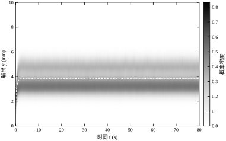
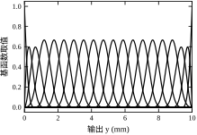
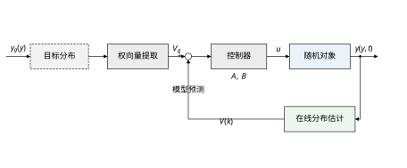
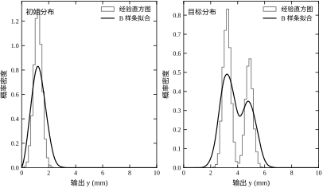
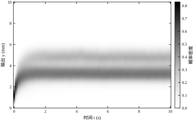
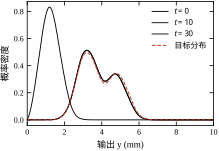
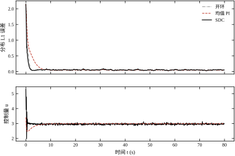
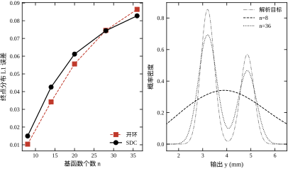
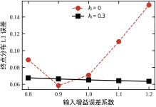
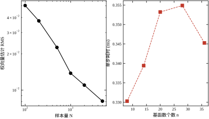

大多数控制回路只盯一个数：给定值、测量值、偏差。控制器把这个数按住，工艺就认为“稳了”。但相当多的质量指标并不是一个数，而是一条分布曲线。纤维直径、涂层厚度、磨粒粒度、燃烧温度、电池单体容量，这些量的合格与否取决于整条分布落在公差带内的比例，而不是平均值是否等于设定值。
两条分布可以有完全相同的均值，不合格率却差一个数量级以上：一条窄而集中，另一条宽而拖尾。只控均值的回路对后者无能为力，因为它看不见“宽”这件事。输出分布控制（stochastic distribution control，SDC）要解决的正是这一类问题：把整条分布当作被控量，让它在形状上逼近工艺给定的目标分布。
本章用一个双批次加工场景贯穿全章。同一台设备交替加工两类工件，两类工件对同一输入 u 的增益不同：低增益批次约 0.160，高增益批次约 0.240，两类占比 60% 与 40%。设备的动态近似为一阶惯性，离散化后时间常数 0.852，采样周期 T_s=0.1 s。因此稳态输出满足
y_{\infty}=\frac{b_i}{1-a}u \tag{73-1}
其中 b_i 取上面两簇之一。同一输入下，两类工件的稳态位置天然相差 1.5 倍，输出分布因此呈双峰。
工艺给出的目标是：两类工件分别集中在 3.20 mm 与 4.85 mm 附近，峰宽（标准差）约 0.28 mm，两类占比 60% 与 40%。初始时刻所有工件都停在 1.20 mm 附近，分布是单峰窄带。控制目标不是把均值从 1.2 拉到 3.86，而是把这条单峰窄带搬移、展宽、分叉成指定的双峰形状。
这个例子把 SDC 与常规控制的差别摆得很清楚。均值控制只需要把平均位置推到 3.86，它对“两类工件各占多少、峰间距是否 1.65 mm”没有任何约束；分布控制则要求整条曲线的形状对得上。图 73-1 给出闭环下分布随时间的演化，灰度越深表示该输出值附近的工件越密集。

把分布当被控量，第一个障碍是它是无穷维的：任意时刻的输出分布是一条函数曲线，控制器无法直接处理。工程上的做法是把它投影到有限维基函数上，用一组系数（权向量）代表整条曲线。本章选用三次 B 样条，因为它有三个好处：非负、单位分解、局部支撑。
图 73-2 画出 20 个三次基函数在输出区间上的形状：两端被钳位（端点处只有一个基函数取 1），中间等距排布，相邻基函数在节点处平滑搭接。

投影之后，整条分布变成 20 维向量 \boldsymbol{v}，被控对象也随之变成“权向量如何随输入演化”的问题。本章用一阶线性模型近似这一演化：
\boldsymbol{v}[k+1]=\boldsymbol{A}_v\boldsymbol{v}[k]+\boldsymbol{B}_v u[k]+\boldsymbol{c}_v \tag{73-2}
其中 \boldsymbol{A}_v 描述分布自身的迁移与扩散，\boldsymbol{B}_v 描述输入对分布的作用方向，\boldsymbol{c}_v 是噪声核带来的常数偏置。三个量都由现场数据辨识得到，不依赖机理建模。
有了这个模型，控制律的推导就退化成一次带约束的最小二乘：选择 u[k]，使下一步的预测分布尽量接近目标分布 \boldsymbol{v}_g，同时不让输入越限。图 73-3 给出闭环结构：目标分布经基函数分解得到 \boldsymbol{v}_g，与在线估计的 \boldsymbol{v}[k] 一起送入控制器，控制器按模型反解 u，作用到随机对象上，输出分布被重新采样、重新估计，形成闭环。

为便于后续各节对照，先把本章的基准结果列在这里。表 73-1 中的数字全部出自 §73.12 的脚本，2000 个蒙特卡洛粒子，20 个基函数，目标为 3.20/4.85 双峰。
表 73-1 三种控制策略的基准指标
| 方案 | 终点分布 L1 误差 | 分布 IAE（mm·s） | 输入范围 | 终点均值 |
|---|---|---|---|---|
| 开环 u=3.0 | 0.0532 | 5.719 | 3.00–3.00 | 3.876 |
| 均值 PI | 0.0466 | 6.924 | 2.46–3.41 | 3.860 |
| SDC | 0.0473 | 5.332 | 1.98–5.29 | 3.839 |
三行数字里有一个必须提前说明的事实：终点误差上三者相差不大。原因是本对象的稳态分布族只有一个自由度——输入只改变分布的整体尺度，不改变峰间距比例；一旦均值对齐，整条稳态分布也就对齐了。SDC 的优势体现在过程量上：分布 IAE 比均值 PI 低 23.0%，比开环低 6.8%，因为它在过渡段同时管住了峰位与峰宽，而不是等分布自己慢慢收敛。
这个事实直接决定了本章的适用边界（§73.11 展开）：单输入、稳态分布族单参数的场合，SDC 主要改善过渡品质；当输入维数大于一、或目标分布不在对象可达的分布族内时，分布控制才是不可替代的。§73.10 会给出后一种情形的实测对比：把峰位比改成对象做不到的 1.433（固有 1.5），三种方案的终点 L1 分别是 SDC 0.1478、均值 PI 0.1334、开环 0.3699，谁也无法精确达标，但开环差得最远，而 SDC 的过渡 IAE 仍比 PI 低 9.8%。
现场说“分布不对”，往往混着三件事：位置偏了、宽度不对、形状不对。这三件事在矩上分得开，在控制手段上也分得开，先分清层次再谈方案，比直接上算法省事得多。
一阶矩与二阶中心矩都可以由权向量直接算出。因为 \phi_i 本身是概率密度，它的重心 m_i=\int y\phi_i(y)\mathrm{d}y 就是第 i 个基函数的“代表位置”，于是 \mu=\sum_i v_i m_i；同记 s_i=\int y^{2}\phi_i(y)\mathrm{d}y，有 \sigma^{2}=\sum_i v_i s_i-\mu^{2}。两式都是权向量的线性函数，一次矩阵乘即可，在线诊断时可以每拍打印出来，不必等分布图。
三个层次的判别与手段分得清：
这个分层有一个很实用的推论：先确认 \mu 与 \sigma 是否已经被现有回路管住，再决定要不要上分布控制。 如果 \mu 还在漂、\sigma 也没人管，直接上 SDC 只会把两个老问题藏进一个新指标里——L1 降不下来，而现场说不出到底哪一段错了。
例子不是随手挑的，它同时满足三个条件，缺一个就演示不出本章的要点。
形状信息必须落在均值与方差之外。 若目标是一个单峰正态，任何单输入都能把均值推到位置，控制问题随即退化成“调一个数”，SDC 与 PI 的结果会几乎重合，读者看不出区别。双峰目标不同：峰间距与峰高比这两个量，均值和方差都描述不了，必须整条曲线才能表达。本章基线里 SDC 与 PI 的终点 L1 只差 0.0007，但峰位偏差 0.025 与 0.050 mm、峰间距 1.500 mm 这些量，只有分布控制才在管。
非高斯的来源要有物理依据。 双峰来自两簇增益不同的工件（0.160 与 0.240，占比 60% 与 40%），这是真实产线上“两类来料混线”的常见情形，不是人为造一个奇怪的分布去难为控制器。物理来源清楚，模型参数才有解释力，也才能在投运后判断“占比变了该怎么办”（§73.10.6）。
可达性要有一个干净的判据。 两簇的稳态位置比恒为 b_2/b_1=1.5，与输入无关（式 73-20）。这条硬约束让“目标可不可达”变成一个除法：目标峰位比与 1.5 差多少，终点误差的下限就在那里。§73.10.4 的 4.5% 偏差正是这样被判死的。
若换成对数正态、重尾这类目标，三个条件里的第三个就不成立：峰位没有解析表达，可达性只能靠数值扫描（§73.8.5 实验一）判断，结论也没那么干脆。这就是本章选双峰的理由——它把方法的能与不能都摆在明面上。
如果只记一句话：分布控制的本质是把“一条曲线”投影成“一组系数”，再把“系数怎么随输入变化”辨识出来，最后用这个模型反解输入；它买到的是形状，付出的是模型与样本。
本章路线：§73.2 给出基函数表示、权向量投影与控制律推导；§73.3 把设计固化为七步；§73.4 讨论连续时间下的 Fokker-Planck 描述与离散设计的对应；§73.5 给出离散实现与采样周期约束；§73.6 分析闭环稳定性与性能指标；§73.7 逐个解释基函数个数、阶次、参考滤波系数、输入权重的物理作用；§73.8 给出调参顺序与常见错误；§73.9 讨论积分补偿、加权跟踪与约束优化；§73.10 讲工程落地的样本量、在线计算与模型维护；§73.11 说明能力边界；§73.12 给出可复现代码。
阅读本章需要三个前置概念：一阶惯性对象的离散化（第 6 章）、最小二乘辨识（第 18 章）、概率密度与期望的定义（第 8 章）。本章不重复这些推导，只引用结论。
本节把 §73.1 的直观说法写成公式。顺序是：先定义分布表示，再定义权向量的动态，然后推导控制律，最后交代这些式子成立的前提。
设输出 y 的取值范围为 [y_{\min},y_{\max}]，在其上放置 n 个三次 B 样条基函数 B_i(y)，i=1,\dots,n。基函数满足非负与单位分解：
B_i(y)\ge 0,\qquad \sum_{i=1}^{n}B_i(y)=1,\quad y\in[y_{\min},y_{\max}] \tag{73-3}
定义归一化基函数
\phi_i(y)=\frac{n}{y_{\max}-y_{\min}}B_i(y) \tag{73-4}
则每个 \phi_i 在区间上的积分恰为 1。输出分布写成
p(y,t)=\sum_{i=1}^{n}v_i(t)\phi_i(y),\qquad \sum_{i=1}^{n}v_i(t)=1,\quad v_i\ge 0 \tag{73-5}
权向量 \boldsymbol{v}(t)=[v_1,\dots,v_n]^{\mathrm T} 就是分布的有限维替身。由 \int\phi_i\mathrm{d}y=1 可知 \int p\,\mathrm{d}y=\sum_i v_i=1，归一化是自动成立的。
权向量的几何含义值得说清楚。因为 \sum_i B_i(y)=1，把 B_i 看作一组“帽子”，v_i 就是分布在第 i 个基函数支撑区间上的加权平均高度。若用 N 个样本 \{y_j\} 估计，最自然的估计量是
\hat v_i=\frac{1}{N}\sum_{j=1}^{N}B_i(y_j) \tag{73-6}
它无偏，且自动满足和为 1。图 73-4 把 20000 个样本的经验直方图与式 (73-5) 的拟合曲线叠在一起，左侧是初始单峰分布，右侧是目标双峰分布；两条曲线的偏差主要出现在峰值附近，这是三次基函数在尖峰处的系统平滑效应。

把每个采样时刻的权向量排成序列，假定它满足一阶仿射递推：
\boldsymbol{v}[k+1]=\boldsymbol{A}_v\boldsymbol{v}[k]+\boldsymbol{B}_v u[k]+\boldsymbol{c}_v+\boldsymbol{\varepsilon}[k] \tag{73-7}
其中 \boldsymbol{A}_v\in\mathbb{R}^{n\times n}，\boldsymbol{B}_v\in\mathbb{R}^{n}，\boldsymbol{c}_v\in\mathbb{R}^{n}，\boldsymbol{\varepsilon} 为辨识残差。常数项不能省：噪声核每个采样周期都会把分布抹平一点，这一项在 \boldsymbol{v} 上的投影是常向量，把它塞进 \boldsymbol{B}_v u 会让输入增益的估计产生偏置。
模型参数用带岭惩罚的最小二乘估计。把 N 组数据写成矩阵 \boldsymbol{M}=[\boldsymbol{v}[0],\dots,\boldsymbol{v}[N-1]]^{\mathrm T} 与 \boldsymbol{u}=[u[0],\dots,u[N-1]]^{\mathrm T}，中心化后求解
\hat{\boldsymbol{\Theta}}=\arg\min_{\boldsymbol{\Theta}}\ \|\boldsymbol{Y}_c-\boldsymbol{X}_c\boldsymbol{\Theta}\|_F^2+\lambda\|\boldsymbol{\Theta}_{1:n}\|_F^2 \tag{73-8}
其中 \boldsymbol{X}_c=[\boldsymbol{M}_c,\boldsymbol{u}_c]，\boldsymbol{Y}_c 是下一步权向量的中心化矩阵，惩罚只加在 \boldsymbol{A}_v 对应的列上，输入通道不惩罚。辨识结果如下表（500 步随机游走激励，n=20）：
| 量 | 数值 | 说明 |
|---|---|---|
| 残差 RMS | 0.01019 | 单步预测的均方根误差 |
| \rho(\boldsymbol{A}_v) | 0.98484 | 谱半径，接近 1 表示分布收敛慢 |
| \|\boldsymbol{B}_v\|_2 | 0.02536 | 输入对分布的作用强度 |
| \|\boldsymbol{c}_v\|_2 | 0.29652 | 噪声核造成的常数偏置 |
谱半径接近 1 不是坏事，它对应“对象时间常数 0.852、分布收敛比状态更慢”这一物理事实；但它也意味着模型的稳态点对参数误差很敏感，这一点在 §73.10 会变成一个必须处理的工程问题。
控制律的出发点是最小化“下一步分布与目标的距离”，同时对输入偏离稳态值的部分施加惩罚：
\min_{u[k]}\ J=\|\boldsymbol{v}[k+1]-\boldsymbol{v}_g\|_2^2+\rho\,(u[k]-u_{\mathrm{ref}})^2 \tag{73-9}
约束为式 (73-7)。把约束代入并对 u 求导，得闭式解
u[k]=u_{\mathrm{ref}}+\frac{\boldsymbol{B}_v^{\mathrm T}\left(\boldsymbol{v}_r[k+1]-\boldsymbol{A}_v\boldsymbol{v}[k]-\boldsymbol{c}_v-\boldsymbol{B}_v u_{\mathrm{ref}}\right)}{\boldsymbol{B}_v^{\mathrm T}\boldsymbol{B}_v+\rho} \tag{73-10}
这里已经把“目标”换成了参考权向量 \boldsymbol{v}_r，原因在 §73.2.4 说明。式 (73-10) 的结构值得逐项读：
式 (73-10) 里的 u_{\mathrm{ref}} 看似必须单独计算，其实可以精确消去。§73.2.5 会证明：把稳态条件代入并令 \rho=0，u_{\mathrm{ref}} 在分子与外面的加项中正好抵消，得到
u[k]=\frac{\boldsymbol{B}_v^{\mathrm T}\left(\boldsymbol{v}_r[k+1]-\boldsymbol{A}_v\boldsymbol{v}[k]-\boldsymbol{c}_v\right)}{\boldsymbol{B}_v^{\mathrm T}\boldsymbol{B}_v} \tag{73-11}
这就是 §73.12 代码真正执行的那一行。它的读法是：把“下一步还差多少”投影到输入方向，再按输入方向的长度折算成控制量；稳态输入被吸收进 \boldsymbol{c}_v 与 \boldsymbol{v}_r，不再显式出现。
式 (73-11) 里也没有留下 \rho。原因是本对象的 \boldsymbol{B}_v^{\mathrm T}\boldsymbol{B}_v 只有 6.4\times10^{-4} 量级（由 \|\boldsymbol{B}_v\|_2=0.02536 平方得到），任何 10^{-3} 以上的 \rho 都会主导分母，把控制量压掉一半以上，并在稳态留下明显偏差。\rho 在这里失去“软化”的调节意义，只剩数值正则作用，因此代码默认取 0。
式 (73-11) 若直接用 \boldsymbol{v}_g，等价于要求“下一步就到位”。在本对象上这会把输入推到限幅：初始分布中心在 1.20，目标中心在 3.86，一步搬完需要的输入远超执行器上限，控制器只能饱和，然后过冲、反向、再饱和，形成振荡。
做法是把目标包一层一阶滤波，令参考权向量按
\boldsymbol{v}_r[k+1]=\boldsymbol{v}_r[k]+\alpha\left(\boldsymbol{v}_g-\boldsymbol{v}_r[k]\right),\qquad 0<\alpha\le 1 \tag{73-12}
演化，控制律中的 \boldsymbol{v}_g 全部换成 \boldsymbol{v}_r[k+1]。\alpha 是“每步允许走完剩余距离的比例”：\alpha=1 退化为直接跟踪目标，\alpha=0.1 表示每步只走一成。
滤波解决了两件事。第一，把“形状误差”分解成许多小步，避免单步大输入触发饱和。第二，\alpha 与对象动态解耦：即使对象时间常数变了，闭环的收敛节奏仍由 \alpha 主导，调试时只需要动一个旋钮。
代价是收敛变慢。§73.6 的实测给出这组折中：\alpha 从 0.10 增到 0.50，分布 IAE 从 5.635 降到 3.913，但输入峰值从 3.117 涨到 8.000（触到限幅）；\alpha=1.00 时 IAE 只再降到 3.867，说明改进已经饱和，而输入仍在限幅上。本章取 \alpha=0.25 作为折中点。
稳态输入 u_{\mathrm{ref}} 由“目标分布是模型平衡点”这一条件确定：
\boldsymbol{v}_g=\boldsymbol{A}_v\boldsymbol{v}_g+\boldsymbol{B}_v u_{\mathrm{ref}}+\boldsymbol{c}_v \tag{73-13}
这是 n 个方程、1 个未知数的超定方程，取最小二乘解
u_{\mathrm{ref}}=\frac{\boldsymbol{B}_v^{\mathrm T}\left(\boldsymbol{v}_g-\boldsymbol{A}_v\boldsymbol{v}_g-\boldsymbol{c}_v\right)}{\boldsymbol{B}_v^{\mathrm T}\boldsymbol{B}_v} \tag{73-14}
把式 (73-14) 代回式 (73-10)、令 \rho=0 并取 \boldsymbol{v}_r=\boldsymbol{v}_g，分子中的 \boldsymbol{B}_v u_{\mathrm{ref}} 与括号外的 u_{\mathrm{ref}} 恰好抵消，只剩式 (73-11)。这一步的工程意义是：稳态输入不必单独计算，它已经包含在 \boldsymbol{A}_v\boldsymbol{v}+\boldsymbol{c}_v 这个“不给输入时对象会走到哪里”的项里。
反过来，如果模型里丢掉 \boldsymbol{c}_v，这项抵消就不成立，控制器会以为“分布不再变化时输入应当为零”。§73.12 的脚本把 \boldsymbol{c}_v 强制置零单独跑了一遍，结果是：终点分布 L1 误差从 0.0473 恶化到 0.7507，分布 IAE 从 5.332 涨到 60.932，终点均值停在 2.993 而不是 3.86，输入在 0.86 到 4.25 之间反复找平衡。这个对照说明常数项不是可选的修饰，而是平衡点能不能对上目标的关键。
范数上 \|\boldsymbol{c}_v\|_2=0.29652 比 \|\boldsymbol{B}_v\|_2=0.02536 大一个数量级，但不能因此推断“噪声的影响是输入的十倍”。稳态解是 (\boldsymbol{I}-\boldsymbol{A}_v)^{-1}(\boldsymbol{B}_v u+\boldsymbol{c}_v)，而 \boldsymbol{I}-\boldsymbol{A}_v 接近奇异，两个方向被放大的倍数并不相同，范数之间没有直接可比性。可以确定的只有一条：省掉 \boldsymbol{c}_v 会让平衡点整体偏掉，偏掉的量足以毁掉整个闭环。
§73.1 表 73-1 里三个方案的终点误差相近，也从侧面说明式 (73-11) 的稳态项是对的：SDC 的终点均值 3.839 与开环 3.876、均值 PI 3.860 处在同一水平，残余差异来自模型残差与蒙特卡洛噪声，而不是稳态偏置。
分布之间的距离用 L1 范数：
d_1\left(p_1,p_2\right)=\int_{y_{\min}}^{y_{\max}}\left|p_1(y)-p_2(y)\right|\mathrm{d}y \tag{73-15}
L1 距离有明确的概率解释：两条密度之间的 L1 距离等于“把一个分布变成另一个分布所需搬运的概率质量”的两倍。它的取值在 0 到 2 之间，0 表示完全相同，2 表示支撑集不重叠。
工程上更关心累计误差，因此再定义
J_{\mathrm{IAE}}=\int_0^{T}\left\|\boldsymbol{v}(t)-\boldsymbol{v}_g\right\|_{1}\mathrm{d}t \tag{73-16}
离散实现中按采样周期累加，单位是 mm·s。式 (73-15) 在固定网格上数值积分，因此不同基函数个数下的数值可以横向比较；若直接用 \sum_i|v_i-v_{g,i}|，数值会随 n 增大而系统性变大，失去可比性，这是本节特意绕开的一个坑。
式 (73-7) 到式 (73-16) 成立依赖四条假设，每条都写明违背后的后果：
| 假设 | 内容 | 违背后的表现 |
|---|---|---|
| A1 一阶 Markov | 下一步权向量只依赖当前权向量与当前输入 | 模型残差出现自相关，闭环出现慢漂移 |
| A2 有限维可表示 | 目标与过程分布能被 n 个基函数近似到可接受精度 | 无论怎么调，终点 L1 误差有下限 |
| A3 输入线性 | \boldsymbol{B}_v u 能描述输入对分布的作用 | 大输入段增益失真，过渡段过冲或迟滞 |
| A4 噪声核时不变 | \boldsymbol{c}_v 为常向量 | 工况变化后稳态点漂移，需要重新辨识或加积分 |
四条假设里，A3 最容易在工程中失效：执行器饱和、阀门死区、物料特性随批次变化，都会让“输入对分布的作用”变成非线性。§73.9 的积分补偿与 §73.10 的模型维护，都是围绕 A3、A4 的补救。
式 (73-7) 是一阶差分方程，但它的来源不是离散系统，而是连续密度演化的采样。把式 (73-19) 右端记成算子 \mathcal{L}，一个保持周期内无输入时的解是 \gamma(t+T_s)=\mathrm{e}^{\mathcal{L}T_s}\gamma(t)，投影到基函数坐标后就是 \boldsymbol{A}_v。\mathcal{L} 是扩散型算子，特征值非正，因此 \boldsymbol{A}_v 的特征值应落在 (0,1] 内。
这条性质给了辨识一个硬判据：若辨识出的谱半径大于 1 而残差又很小，不要相信“对象自激”的解释，先去查数据里有没有未建模的外部漂移（来料变化、环境温度、上游工序切换）。这些漂移会被回归当成“分布自己会走”，塞进 \boldsymbol{A}_v 里，表现为特征值越界。本章第一次辨识就撞上过这种事：谱半径恰好等于 1.00000，闭环在目标点上算出零输入（表 73-6 第 1 轮）。
反过来，谱半径可以从连续时间的角度读。本章 0.98484 对应连续衰减率 \ln 0.98484/0.1=-0.153\ \mathrm{s^{-1}}，时间常数 6.5 s，比对象本身的 1/p=0.625 s 慢一个数量级。这个慢模态就是“输入推不动的那个方向”：它不参与闭环校正，只能自己衰减，所以 30 s 时终点 L1 仍在 0.05 附近随机游走（§73.5.3），而不是收敛到零。读懂了这一点，就不会把残余误差当成控制器没调好。
同一式子还解释了为什么改 T_s 必须重辨识：\boldsymbol{A}_v(T_s)\approx\mathrm{e}^{\mathcal{L}T_s} 随周期指数变化，把 0.1 s 的模型直接用在 0.05 s 的控制器上，等于让模型认为分布比实际慢一倍，闭环先变迟钝、再在积分作用下过冲。
本章出现三个“误差”：权向量的 2 范数、固定网格上的 L1（式 73-15）、时间积分 IAE（式 73-16）。它们不是同一个量的三种写法，各有各的用途，混用会得出相反结论。
权向量 2 范数只用于模型体检。它的量纲是概率，数值与 n 弱相关，残差 RMS 0.01019 与权向量估计噪声 0.01099 同量级，这一条比较是成立的。
L1 用于横向比较不同方案、不同 n 的结果。它与权向量范数之间有一个上界：记 \boldsymbol{G} 的元素为 \int\phi_i\phi_j\mathrm{d}y，则 d_1\le\sqrt{L\,\lambda_{\max}(\boldsymbol{G})}\,\|\Delta\boldsymbol{v}\|_2。\lambda_{\max}(\boldsymbol{G}) 随 n 近似线性增长，所以同样的权向量偏差，在细网格上量出的 L1 大约按 \sqrt{n} 放大。这解释了 §73.6.4 里 n 从 8 增到 36 时 L1 从 0.0150 涨到 0.0828 的大部分：涨了 5.5 倍，比 \sqrt{n} 的 2.1 倍还多，多出来的部分是细网格暴露的真实表示误差——峰高被压低 42%，粗网格根本看不见这件事。
IAE 用于验收与方案排序。它把过渡段的误差按时间累加，单位 mm·s，能反映“快不快”。但 IAE 对末端的长尾很敏感：本章开环在 2 s 之后与 SDC 基本重合，IAE 仍高出 6.8%，差的就是前 1 s 那段。所以读 IAE 时要同时看 §73.6.3 的曲线，否则会误以为开环全程都差。
三条结论合起来：体检看 2 范数，形状看 L1，快慢看 IAE；任何一项都不能单独当验收指标。
双峰分布最自然的表示是高斯混合：三个参数一组（权重、均值、方差），两个分量就能精确描述本章的目标。B 样条要用 20 个系数才能近似，峰高还被压低 42%。看起来高斯混合更划算，为什么本章不用？
关键差别在“参数以什么方式进入模型”。B 样条表示下，密度对权向量是线性的：\gamma=\sum_iv_i\phi_i，权向量的演化可以直接用线性差分方程拟合，控制律也能解析反解。高斯混合不是：均值与方差藏在指数里，权向量一动，密度的变化既非线性也不局部，辨识要解非线性最小二乘，控制律要解非线性方程，每一步的收敛性都得单独证明。对一个要在产线上每 0.1 s 跑一次的控制器来说，这个代价太大。
还有一条更实际的理由：分量个数要事先定死。本章目标恰好两个峰，高斯混合取两个分量很合适；可工况一变（占比变、混入第三种来料），分量数就得改，整模型作废。B 样条的 n 只影响分辨率，不改变模型结构，占比变化只是权向量变了一个点，模型照用（§73.10.6）。
代价也要说清：B 样条的表示误差是系统性的，峰越尖、节点越疏，压低越多。这个误差不会随样本量增大而消失，只能靠加密节点换（§73.6.4）。所以选 B 样条等于选了“线性换精度”这条路，精度不够时用 n 补，而不是换表示。
本章字母重复使用较多，这里集中交代一次，后面不再解释。
符号看混的直接后果是把“\boldsymbol{v}_r\ne\boldsymbol{v}_g”误读成稳态偏差。实际上参考滤波只改过程、不改终点：\boldsymbol{v}_r 最终会等于 \boldsymbol{v}_g（§73.6.2 的“终点 L1 四行相同”就是这件事的数值证据）。
代码里的命名与公式一一对应，可以对照着看：bspline_design 返回的是 B_i(y) 组成的矩阵，pdf_value 返回的是密度 \gamma，identify 返回三元组 (\boldsymbol{A}_v,\boldsymbol{B}_v,\boldsymbol{c}_v)。读代码时记住这一条，就不会把 B 误当成基函数矩阵——它是输入方向的常向量，与 y 无关。
§73.2 给出的是公式，工程上还要把它变成一串能交付、能验收的动作。本节把整章的设计固化为七步，每一步都写明输入、输出和判据，判据不到就不要进下一步。这七步的顺序不能颠倒：基函数个数定不下来，辨识就没有明确的目标维数；辨识没通过体检，调控制参数只是在拟合模型误差。
分布控制的第一步不是建模，而是把工艺语言翻译成数学对象。要定的有三件事。
输出区间。 取 [y_{\min},y_{\max}] 覆盖全部可能取值并留出余量。区间取得太窄，越界样本被钳位到端点，权向量在最外侧两个基函数上堆积，形成虚假的尖峰；区间取得太宽，同样的 n 个基函数摊在更长的区间上，分辨率下降。本章取 [0,10] mm，实际数据分布在 0.5 到 6 之间，两端各留出一段空档。
目标分布。 工程上有三个来源：由公差带反推（合格区间给定，要求落在区间内的概率最大）、由历史合格批的统计分布拟合、由下游工序指定。本章用第二种：两类工件各自的目标位置与峰宽来自合格批的实测统计，占比 60% 与 40% 来自批次计划。
可达性预判。 这一步最容易被跳过，代价也最大。做法是先用开环把输入从头扫到尾，记录每个输入下的稳态分布，看目标分布是否落在这条“稳态分布曲线”上。落不上，就要提前判断差距是可接受的近似，还是必须增加执行器维度。§73.10 的非比例双峰实验就是这一步的负面例子：目标峰间距要求 1.43 倍，对象固有比例 1.5 倍，单输入无论怎么调都对不上，三种方案的终点 L1 全部在 0.13 以上。
基函数个数 n 由“要多细的分辨率”决定，经验取法是
n\approx\frac{y_{\max}-y_{\min}}{\Delta y} \tag{73-17}
其中 \Delta y 是工艺愿意分辨的最小分布尺度。本章区间长 10 mm，关心 0.5 mm 量级的峰形变化，取 n=20。阶次取 3（三次），因为二次基函数的二阶导不连续，拟合双峰时峰顶会出现折角；四次以上局部支撑变宽，单点故障会牵连更多权值，不利于定位。
端点处理用钳位：区间两端各重复 d+1 个节点，使端点处只有一个基函数取 1。这样越界样本不会把权重摊到不存在的基函数上，权向量始终保持非负且和为 1。
n 的选择有明确代价，不是越大越好。§73.6 的扫描给出：n 从 8 增到 36，同样控制器下的终点 L1 从 0.0150 涨到 0.0828，分布 IAE 从 1.109 涨到 5.356。原因不在控制律，而在“分布距离”这个指标本身随维数变细而变严：同样的物理偏差，在 36 个基函数下会被切成更多段，累计的绝对差更大。所以横向比较不同 n 的方案时必须用固定网格上的 L1（式 73-15），不能直接比权向量的差。
辨识需要“输入在动、分布跟着动”的数据。本章用随机游走激励：每步在当前输入上叠加标准差 0.25 的扰动，限制在 0.3 到 7.5 之间，共 500 步。这个激励有三个要求。
采集时还有一个容易被忽略的细节：权向量与输入必须严格对齐到同一采样时刻。分布是“这一周期内所有样本”的统计，输入是“这一周期开始时的保持值”。若把输入记成周期结束时的值，辨识出的 \boldsymbol{B}_v 会系统性偏小，闭环表现为“推不动”，操作工会误以为执行器不够大。
辨识用式 (73-8) 的中心化岭回归，惩罚只加在 \boldsymbol{A}_v 的列上，输入通道不惩罚。代码在 ch073_sim.py 的 identify 函数里，核心是三行：中心化、解线性方程组、回代求常数项。
辨识完必须做三项体检，任何一项不过就回到第三步改数据。
表 73-2 辨识模型的三项体检
| 体检项 | 判据 | 本章实测 | 不过关的含义 |
|---|---|---|---|
| 单步残差 RMS | 小于权向量估计噪声的 2 倍 | 0.01019 | 模型结构不足，或激励幅度过大 |
| \boldsymbol{A}_v 谱半径 | 小于 1 且接近 1 | 0.98484 | 大于等于 1 表示分布会自激发散 |
| 常数项与输入项量级 | \|\boldsymbol{c}_v\| 与 \|\boldsymbol{B}_v\|u 可比 | 0.29652 与 0.076（u=3） | \boldsymbol{c}_v 被放大到千量级说明回归共线 |
第三项是最容易翻车的地方。不做中心化、或者对输入通道也加惩罚时，n=28 以上的回归矩阵接近共线，常数项会被解到 10^3 量级，模型在训练集上残差很小，一投运就发散。本章用中心化加仅惩罚 \boldsymbol{A}_v 的处理把常数项范数压在 0.29652。
三项体检不过关时的回退路径不一样，退回哪一步决定了要重做多少工作。表里的判据都是可打印的数值，现场不需要凭感觉。
回退有一条纪律：每次只改一处，改完三项体检全部重跑。 同时改激励幅度和正则参数，即使指标变好也说不清是哪一项起的作用，下一批数据一换就会退回原样。
目标分布 \boldsymbol{v}_g 用与在线估计完全相同的一套基函数投影（式 73-6），不能另算一套。两套基函数哪怕只差端点处理，\boldsymbol{v}_g 与 \boldsymbol{v}[k] 就不在同一个坐标里，闭环会稳定在一个“看起来差一点”的错误分布上。
控制器初始参数按保守取法：\alpha=0.25，k_i=0，\rho=0，积分限幅 1.5。\alpha 的起点不要大于 0.3，理由是 §73.6 的扫描显示 \alpha=0.50 时输入峰值已经打到 8.000 的限幅，闭环在饱和边缘工作，一旦对象增益偏大就会振荡。k_i 先置零，等确认无稳态偏差后再按 §73.9 的方法加。
闭环验证分三级，每级只回答一个问题。
三级的分工不能合并。离线通过而半实物失败，说明问题在模型失配，应该去补激励数据或加积分；两级都通过而投运漂移，说明问题在 \boldsymbol{c}_v 的时变性（假设 A4 失效），应该建立定期重辨识机制。
验收指标不能只看终点误差，否则会漏掉整段过渡过程。表 73-3 给出本章使用的六项指标与门限，其中后两项是分布控制特有的。
表 73-3 分布控制的验收指标
| 指标 | 定义 | 本章基准值 | 门限 |
|---|---|---|---|
| 终点分布 L1 | 式 (73-15) | 0.0473 | 小于开环的 1.2 倍 |
| 分布 IAE | 式 (73-16) | 5.332 | 小于均值控制的 0.9 倍 |
| 输入范围 | 全程最小/最大 | 1.98–5.29 | 不触限幅 |
| 终点均值 | 末时刻样本均值 | 3.839 | 与目标均值偏差小于 1% |
| 峰位偏差 | 左峰/右峰位置误差 | 0.025 / 0.050 mm | 小于半个峰宽 |
| 峰间距 | 两峰之间的距离 | 1.500 mm | 与目标 1.575 mm 相差小于 5% |
门限里“小于均值控制的 0.9 倍”这一条是本章的核心验收点。终点 L1 三者相差无几（0.0473 对 0.0466），单看它会得出“分布控制没必要”的结论；分布 IAE 上 SDC 为 5.332、均值 PI 为 6.924，低 23.0%，这才是分布控制在过渡段买到的实际收益。峰位与峰间距两项则回答另一个问题：形状对不对。本章 SDC 的峰位偏差 0.025 mm 与 0.050 mm，都在半个峰宽以内；峰间距 1.500 mm 与目标 1.575 mm 差 4.8%，这个残差不是控制误差，而是对象固有比例 1.5 与目标比例 1.575 之间的差（§73.4.1 已给出解析解释）。
七步走完，交付物应当包括：一份基函数与区间的选择说明、一份辨识数据与三项体检结果、一组控制器参数、一份三级验证记录、一张验收指标表。缺任何一项，后续维护的人都无法判断“当初为什么这么调”。
七步里有四个动作不产生任何可见输出——没有图、没有参数、没有指标，所以最容易被跳过。它们的共同特点是：跳过时系统照样能跑，代价在很久以后才显现。
第一，目标可达性预判。 它只是拿目标峰位比与对象固有比例做一次除法，不依赖任何仿真。跳过它，后面所有调参都在一个原理上到不了的目标上优化：本章 4.5% 的比例偏差让终点 L1 从 0.0473 恶化到 0.1478（表 73-11），而现场只会看到“怎么调都降不下去”。
第二，输入与权向量的同拍对齐。 它不改变任何参数，只决定数据怎么记。跳过它，辨识出的 \boldsymbol{B}_v 系统性偏小，闭环“推不动”；操作工的第一反应是加大 \alpha，结果输入很快贴到 8.000，误判成“执行器选小了”（表 73-5 第二行）。判据很简单：开环稳态增益与式 (73-1) 对不上就是错拍。
第三，用同一套基函数算目标权向量。 它看起来只是“再算一次投影”，很容易被写成另一段代码，端点处理稍有不同就出事。两套基函数意味着 \boldsymbol{v}_g 与 \boldsymbol{v}[k] 不在同一坐标里，闭环会稳定在一个“看起来只差一点”的错误分布上，而且无论怎么调 \alpha 都不动——因为差的不是控制量，是坐标。
第四，空拍冻结。 停机、换批、清洗期间没有样本，代码若照样调用提权，会得到全零向量；控制器把它当成“分布跑到零”，算出巨大输入，一开车就打满。正确做法是保持上一拍的权向量，同时暂停积分累积（§73.5.4）。
这四件事有一个共同的验收方式：都能在一次开环或空载试验里暴露，不需要闭环。 交付文档里应当各留一行记录——目标比例差多少、开环增益对不对、\boldsymbol{v}_g 与 \boldsymbol{v}[0] 用的是一个函数吗、空拍时输出什么。四行记录的成本可以忽略，省下的是一轮返工。
§73.2 到 §73.3 全部在离散时间上工作。真实对象的输出是连续演化的，分布每时每刻都在变，只在一个采样时刻被“拍照”。本节把粒子级动态写成随机微分方程，看密度如何演化，再说明离散模型与它的换算关系。这条线索的价值不在于多一个公式，而在于它能给 §73.1.4 那个“稳态分布只有一个自由度”的实测事实一个解析解释。
设第 i 个粒子的输出满足
\mathrm{d}y_i=\left(-p_i y_i+g_i u\right)\mathrm{d}t+\sigma_c\,\mathrm{d}W_i \tag{73-18}
其中 p_i 与 g_i 是粒子的固有属性（批次差异），在一次运行内不变；W_i 是相互独立的标准布朗运动。对固定输入 u，这是一个 Ornstein-Uhlenbeck 过程，其密度 \gamma(y,t) 的演化由 Fokker-Planck 方程给出
\frac{\partial\gamma}{\partial t} =\frac{\partial}{\partial y}\left[\left(p y-gu\right)\gamma\right] +\frac{\sigma_c^{2}}{2}\frac{\partial^{2}\gamma}{\partial y^{2}} \tag{73-19}
右端第一项是漂移（把概率质量往 gu/p 附近推），第二项是扩散（把峰抹平）。令 \partial\gamma/\partial t=0 并代入高斯形式可解得稳态密度
\gamma_{\infty}(y)=\sum_{i}w_i\,\mathcal{N}\!\left(\frac{g_i u}{p_i},\ \frac{\sigma_c^{2}}{2p_i}\right) \tag{73-20}
式 (73-20) 是本节最重要的一行。它说明两件事：峰位 g_i u/p_i 随输入线性移动，峰宽 \sigma_c/\sqrt{2p_i} 与输入无关。本章的仿真把 g_i 按 b_i p_i/(1-a) 缩放（§73.4.3 说明理由），于是峰位化简成 b_i u/(1-a)，与 p_i 无关；两簇峰的位置比恒为 b_2/b_1=1.5，宽度比只由 p_i 决定。
把这两条合起来读：输入只能整体搬移与缩放整条分布，不能改变峰间距比例，也不能通过输入改变峰宽。§73.1.4 里“稳态分布族只有一个自由度”这句话，到这里才算有了根据。它也直接划出了本章方法的边界——单输入能调的只有那一维，目标分布若在其余维度上不合比例，谁都做不到。
式 (73-18) 没有闭式解（p_i 是随机属性，密度是混合分布），只能数值积分。本章用 Euler-Maruyama：
y_{k+1}=y_k+\left(-p_i y_k+g_i u_k\right)\Delta t+\sigma_c\sqrt{\Delta t}\,\xi_k, \qquad \xi_k\sim\mathcal{N}(0,1) \tag{73-21}
取 \Delta t=0.002 s，控制量每 0.1 s 更新一次，即每个保持周期内积 50 步。三个参数选择的理由如下。
仿真中还有一个必须做的截断：每步把 y 限制在 [-1,14]。这不是物理约束，而是防止极少数粒子在噪声驱动下跑到 10^{3} 量级，把权向量估计拖偏。截断区间比基函数支撑区间 [0,10] 宽，正常粒子几乎不会碰到边界。
两种情形要能对比，三组参数必须一一对上。
时间常数。 一阶惯性的离散化是 a=\mathrm{e}^{-pT_s}，反解得
p=-\frac{\ln a}{T_s}=-\frac{\ln 0.852}{0.1}=1.6017 \tag{73-22}
代码取 p=1.600，反算 a=\mathrm{e}^{-0.16}=0.85214，与离散模型的 0.852 相差 0.02%。
增益。 让两种情形的稳态输出相同：离散稳态 bu/(1-a)，连续稳态 gu/p，令二者相等得
g=\frac{b\,p}{1-a} \tag{73-23}
低增益簇 b=0.160 对应 g=0.160\times1.600/0.14786=1.731。代码写成 g = g * p / (1.0 - A_MEAN)，一行完成全部粒子的换算。这一步最初漏掉过，症状是连续情形的终点均值停在 4.655 而不是 3.86——增益没换算，对象被放大了 1.2 倍。
噪声强度。 离散模型用拉普拉斯噪声，尺度 s=0.040+0.015u，AR(1) 的稳态方差为 2s^{2}/(1-a^{2})；连续模型的稳态方差为 \sigma_c^{2}/(2p)。令两者相等：
\sigma_c=2s\sqrt{\frac{p}{1-a^{2}}} \tag{73-24}
取 u=3 时的 s=0.085，得 \sigma_c=0.085\times2\times\sqrt{1.600/0.274096}=0.4107，代码取 0.410。反向核对：离散稳态标准差 0.2296，连续 0.2292，相差 0.2%，说明换算正确。
用与离散情形完全相同的控制律（式 73-11 加式 73-12 的参考滤波，\alpha=0.25）跑 10 s，连续情形的终点分布 L1 误差为 0.0454，终点粒子均值 3.832；离散情形对应 0.0473 与 3.839。两者差 4%，落在蒙特卡洛波动范围内（连续 1200 个粒子，离散 2000 个）。
图 73-5 是连续情形的密度演化热图。分布从 1.2 mm 附近的窄带出发，约 1 s 内完成大部分搬移，2 s 后分成两条清晰的水平脊线，分别停在 3.20 mm 与 4.85 mm；3 s 之后灰度基本不再变化，说明已进入稳态。与图 73-1 的离散情形相比，图 73-5 的轨迹更光滑，没有逐周期的台阶感，但两条脊线的最终位置与宽度一致。

式 (73-21) 是近似，近似到什么程度需要给个数。噪声为加性时，Euler-Maruyama 的稳态方差有闭式解。单步更新写成 y_{k+1}=(1-p\Delta t)y_k+\sigma_c\sqrt{\Delta t}\,\xi_k，令其稳态方差为 s^{2}，由 s^{2}=(1-p\Delta t)^{2}s^{2}+\sigma_c^{2}\Delta t 解得
s^{2}=\frac{\sigma_c^{2}\Delta t}{1-(1-p\Delta t)^{2}} =\frac{\sigma_c^{2}}{2p-p^{2}\Delta t} =\frac{\sigma_c^{2}}{2p}\cdot\frac{1}{1-p\Delta t/2}
右端的第一个因子正是精确的 OU 稳态方差，第二个因子就是离散化偏差。代入 p=1.600、\Delta t=0.002，p\Delta t/2=0.0016，偏差为 +0.16\%。
这个推导可以被实测核对。§73.4.3 末尾给出的两个数是离散稳态标准差 0.2296、连续稳态标准差 0.2292，相对差 0.2296/0.2292-1=0.17\%，与解析的 0.16% 吻合到三位有效数字。两者都指向同一件事：方差偏大是 Euler 格式的系统偏差，方向固定、量级已知，不是随机波动。
均值没有这个偏差。稳态均值满足 \bar y=(1-p\Delta t)\bar y+g u\Delta t，解得 \bar y=gu/p，与精确解完全相同。这也解释了为什么连续与离散两种情形的终点均值 3.832 与 3.839 只差 0.2%，而方差差得更少。
关于 \Delta t 的选取还有两个量要说清。显式格式的稳定条件是 \Delta t<2/p=1.25 s，取 0.002 s 有 625 倍余量，稳定性完全不是约束。真正的约束是偏差：偏差是一阶的，\Delta t 减半偏差减半。若把 \Delta t 放大到 0.02 s，偏差涨到 1.6%，此时连续与离散的对比就会出现肉眼可见的宽度差，容易被误判成“两种模型对不上”。
最后一点是保持周期与积分步长的分工。控制量每 0.1 s 更新一次，噪声却按 0.002 s 连续施加，一个保持周期内积 50 步。这个处理对应“零阶保持的执行器 + 连续搅拌的噪声”这一物理事实。若把噪声也按保持周期离散（每个周期只加一次大的随机增量），稳态方差不变，但噪声在周期内的时序被抹平，权向量的单步演化会出现额外的相关性，辨识残差随之上翘。
控制律不用改。 式 (73-11) 只用到当前权向量与模型，不关心对象是连续还是离散。连续对象的 Fokker-Planck 算子在一个保持周期上的作用，投影到基函数坐标里就是辨识出的 \boldsymbol{A}_v，所以同一份代码可以直接驱动连续对象。
控制周期一变，两个参数都要重标定。 \alpha 的含义是“每周期走完剩余距离的比例”，周期缩短一半，等效收敛速度加倍；同时 \boldsymbol{A}_v 也要按新的保持周期重新辨识。只改周期不改参数，闭环会先变快、再振荡，操作工往往误判成“控制器太激进”。
噪声强度不是自由参数。 式 (73-24) 把它和对象的物理噪声绑在一起。若把 \sigma_c 当旋钮调，调到“图好看”为止，实际是把模型误差伪装成了控制效果：分布宽度对不上时，L1 误差永远降不到 0.05 以下，而此时控制器参数怎么调都没用。
这一节写了 Fokker-Planck、Euler-Maruyama、三组参数换算，最后还要说清它们在整章里的位置，否则容易误以为控制器是在连续模型上设计的。实际上控制器从来不用连续模型。
它承担的第一件事是解释。 式 (73-20) 说清了“输入只能搬移、不能改变峰间距比例”，这一句让 §73.1.4 的实测事实从“观察到的现象”变成“可推导的结论”。没有这一步，读者只能记住“本章的终点误差三种方案差不多”，却不知道为什么，也就无法判断换一个对象时会不会还是这样。
它承担的第二件事是独立校验。 连续情形用了不同的噪声机制（布朗运动对拉普拉斯）、不同的积分器（Euler-Maruyama 对离散递推）、不同的粒子数（1200 对 2000），却给出 0.0454 与 0.0473、3.832 与 3.839 这两组接近的结果。两条独立路径互相印证，比单一路径跑十次更有说服力。
它不承担设计。 控制器里的 \boldsymbol{A}_v、\boldsymbol{B}_v、\boldsymbol{c}_v 全部由离散数据辨识得到，不是从 p、g、\sigma_c 推出来的。理由是式 (73-20) 里的 p_i、g_i 是不可测的个体属性，只有它们的混合效果可测；直接辨识混合后的算子，比先估个体参数再聚合要稳。
它也不承担实时性。 每个保持周期积分 50 步，成本是离散递推的 50 倍。它只用于离线交叉验证，不能塞进控制器。两条线的关系是“一条跑闭环、一条跑校验”，反过来用就既慢又没必要。
式 (73-18) 有三条隐含前提，实际对象上任何一条破了，连续模型就只能当“局部近似”用，不能当“物理真相”。
噪声强度随输入变化。 本章离散模型的噪声尺度是 s=0.040+0.015u，而连续模型用的是常数 \sigma_c=0.410——这个数是在 u=3 处标定的（s=0.085）。若工作点移到 u=5，实际 s=0.115，比标定点大 35.3%，真实的峰宽会比常数 \sigma_c 算出来的宽三成。也就是说，式 (73-20) 的“峰宽与输入无关”只对固定噪声强度成立；本章对象在 u 变化范围不大时（1.98 到 5.29）误差尚可接受，u 大幅变化时必须把 \sigma_c 写成 u 的函数，或直接用离散模型。
漂移项非线性。 执行器饱和后 gu 不再随 u 线性增长，阀门死区让小输入完全无效。这两处一出现，Ornstein-Uhlenbeck 的前提就没了，稳态峰位不再是 g_iu/p_i 的线性函数。表现是：输入超过某个值后，峰位不再移动，而模型仍以为会移动。
个体参数时变。 设备磨损、温度漂移会改变 p_i、g_i，式 (73-19) 的定常解随之移动，Fokker-Planck 方程不再有“固定的稳态密度”。这正是 §73.10.3 要求定期重辨识的物理原因，也是 \boldsymbol{c}_v 会过期的根本机制。
三个场景的共同点：连续模型给的是“结构化理解”，一旦环境离开标定点，理解还在、数字不准。工程上正确的用法是拿它判断趋势与量级，拿离散辨识模型做控制。
现场控制器都是按拍子跑的：采一批数据、算一次、出一个输入、等下一个周期。离散情形要回答三个问题——拍子取多长、一个拍子里把样本变成权向量的活怎么干、算不算得过来。
上界来自对象。 一阶惯性的时间常数是 1/p=0.625 s。经验规则是 T_s\le\tau/5，本章取 T_s=0.1 s，是时间常数的 1/6，一个过渡过程内有 6 个控制动作。取得更细没有意义：控制律改变的是分布的“整体位置”，而分布本身要等对象响应之后才会动，周期短于 \tau/5 只是在重复同一个决策。
下界来自统计。 分布不是瞬时量，它是一个周期内所有样本的统计。每个周期可用的样本数为 N_k 时，权向量的估计误差按 N_k^{-1/2} 下降。§73.6 的实测：N=2000 时误差 0.01099，与模型残差 0.01019 同量级；若一周期的样本降到 100 个，误差涨到 0.05035，控制器会把统计噪声当成分布真的在动，输入跟着噪声抖。这就是周期不能无限缩短的根本原因——缩短周期等于减少每个周期的样本。
对齐来自生产节拍。 统计窗口必须落在同一批次内，否则一个窗口里混了两个批次，两条分布叠在一起，峰被抹平。本章的两类工件按批加工，窗口边界与批次边界重合。
三条约束合起来，T_s 的可行区间通常不宽：本章是 0.1 s（下界由 2000 个样本的填充时间给出，上界由 0.625 s 的时间常数给出）。
一个控制周期只有三件事，耗时差别很大。
采样。 收集本周期内全部工件的输出 y_j，j=1,\dots,N。
提权。 按式 (73-6) 计算 \hat v_i=\frac1N\sum_j B_i(y_j)，写成矩阵形式是一次稀疏矩阵乘。B 样条的局部支撑在这里发挥作用：每个样本只落在 d+1=4 个基函数上，设计矩阵每行只有 4 个非零元，计算量是 O(N(d+1)) 而不是 O(Nn)。代码里 BSpline.design_matrix(...).toarray() 把稀疏矩阵转成稠密矩阵只是为了书写直观，工程实现应保持稀疏。
解算。 按式 (73-11) 算一次 u，需要一次 n\times n 矩阵乘向量、两次点积，计算量 O(n^{2})，与样本量无关。
实测（2000 个粒子、300 次平均）：提权 0.351 ms，解算 0.003 ms，合计 0.354 ms。两次独立运行的合计值分别是 0.354 ms 与 0.375 ms，波动来自计时本身。控制周期 0.1 s，占用率不到 0.4%。
这组数字给出一个明确的结论：瓶颈在统计，不在控制。 解算只占全部耗时的 1% 左右，优化控制律（比如把矩阵乘改成递推）对总耗时几乎没有影响；真正省钱的做法是减少每周期处理的样本数，或者利用局部支撑把提权写成按基函数分桶的累加。
图 73-6 把 t=0、t=10 s、t=30 s 三个时刻的分布曲线与目标叠在一起。t=0 是 1.20 mm 附近的单峰，L1 误差 2.1471，此时分布与目标几乎没有重叠；t=10 s 双峰已经成形，左峰落在 3.20 mm、右峰 4.725 mm，L1 降到 0.0575；t=30 s 的形状与 10 s 时几乎一致，L1 为 0.0654。

注意最后一行：30 s 的 L1 比 10 s 略大，不是控制变差，而是分布估计的统计噪声在 0.05 这个量级上随机游走。800 步的终点误差是 0.0473，也落在这个波动带里。这带来一个验收上的提醒：终点误差不能按“单调下降”去判，应当看一个时间窗内的平均值，或者直接看窗口内的最大值。
限幅后的输入要回灌模型。 控制器解算出 u 之后要经过执行器限幅，实际作用到对象上的是限幅后的值。下一拍的权向量 v[k+1] 必须用这个真实值去解释，不能用未限幅的解算值；否则模型预测会系统性乐观，控制器以为“我已经推到位了”，实际没有。
每拍检查权向量是否归一。 越界样本被钳位到端点、浮点累加有舍入，\sum_i v_i 会缓慢偏离 1。本章靠 B 样条的单位分解自动保持在 10^{-15} 量级，所以代码没有做显式归一化；换成其他基函数（例如高斯混合）就必须每拍归一，否则控制律里的 B^{\mathrm T}B 会随尺度漂移。
空拍要冻结，不要用空集估计。 设备停机、换批、清洗期间没有样本，此时若照样调用提权，会得到全零向量，控制器算出巨大的输入，一开车就打满。正确做法是保持上一拍的权向量不变，同时暂停积分项累加。
§73.5.2 的做法是“每拍重算”，用本周期全部样本给出一个独立估计。它简单、无偏，但噪声不会再降：每拍只有 2000 个样本，权向量误差就锁在 0.01099。想把噪声压下去，可以改成指数加权：
\hat{\boldsymbol{v}}[k]=(1-\beta)\hat{\boldsymbol{v}}[k-1]+\beta\,\bar{\boldsymbol{v}}[k]
其中 \bar{\boldsymbol{v}}[k] 是本拍的批量估计。\beta 越小，等效窗口越长。稳态下这个滤波把单拍估计的方差压到 \beta/(2-\beta) 倍，等效独立拍数为 (2-\beta)/\beta；取 \beta=0.1 时等效 19 拍，噪声从 0.01099 降到 0.01099/\sqrt{19}=0.0025。
代价是滞后。\beta=0.1 的阶跃响应要走 10 拍（1 s）才完成 63%，而本章的过渡段总共只有 2 s，滤波会把整个过渡过程拖慢。所以两者的分工是明确的：过渡段用批量估计，进入稳态后再切到 \beta=0.1 的流式估计。 切换判据用 L1 的变化率——连续若干拍的 L1 变化小于噪声带 0.01 时即可切换，不必等固定时间。
指数加权还有一个附带好处：两个和为 1 的向量做凸组合仍和为 1，归一化不会因滤波而破坏。这一点在换成高斯混合等非单位分解基函数时不成立，那时必须每拍重新归一（§73.5.4 第二条）。
同一个 \hat v_i=\frac1N\sum_j B_i(y_j) 有三种写法，精度与耗时的差别值得交代清楚，因为它们决定了这套方法能不能塞进 PLC。
逐样本稀疏累加。 每个样本只落在 4 个基函数上，直接把这 4 个系数加进累加器。计算量 4N 次乘加，2000 个样本是 8000 次；若按稠密矩阵算则是 Nn=40000 次，慢 5 倍。工程上应走这一条。
先分桶再卷积。 把输出区间按 0.02 mm 分桶（500 个桶），先统计每桶样本数，再与基函数在桶心上的取值相乘。计算量降到 O(N+500n)，且直方图可以直接从采集卡硬件读出。代价是桶内量化：桶宽 0.02 mm 相当于给分布额外叠了一个标准差 0.02/\sqrt{12}=0.0058 mm 的均匀展宽，相对峰宽 0.28 mm 是 2.1%。这个偏差是系统性的，会在分布宽度上体现出来，必须在交付文档里写明，否则下游会把它当成对象的真实噪声。
递推最小二乘。 把提权写成带遗忘因子的递推最小二乘，等价于流式估计与参数自适应的合并。除非同时要在线更新 \boldsymbol{A}_v（§73.10.3 的模型维护），否则没有必要引入，它把简单的一次平均变成了带矩阵求逆的迭代。
精度方面反而不是问题。2000 项双精度累加的相对误差在 10^{-15} 量级，单精度也只有 10^{-6} 量级，都远低于权向量估计噪声 10^{-2}。真正的风险在时间戳对齐，不在舍入：采样时刻与周期起始时刻的偏差若超过半个周期，权向量与输入就错拍了（§73.3.3）。
产线提速或降速时，T_s 会变。三个量必须一起改，只改一个必出问题。
参考滤波系数 \alpha。 \alpha 的连续等效速率是 r=-\ln(1-\alpha)/T_s。本章 \alpha=0.25、T_s=0.1 s，得 r=-\ln0.75/0.1=2.877\ \mathrm{s^{-1}}，时间常数 0.348 s。若周期减半到 0.05 s，要保持同样的速率，\alpha'=1-\mathrm{e}^{-rT_s'}=1-\mathrm{e}^{-0.1439}=0.134。沿用 0.25 等于把速率翻倍，闭环会在噪声上抖动。
状态矩阵 \boldsymbol{A}_v。 它按 \boldsymbol{A}_v(T_s)\approx\mathrm{e}^{\mathcal{L}T_s} 随周期变化，周期减半时应取矩阵平方根 \boldsymbol{A}_v(T_s')=\boldsymbol{A}_v(T_s)^{1/2}。平方根要按特征分解算，不能对元素逐个开方——\boldsymbol{A}_v 不是对角阵，逐元素开方会破坏它的行和与谱结构。常数项 \boldsymbol{c}_v 同样要按新的 (I-\boldsymbol{A}_v) 重算。这三步做完，最稳妥的做法仍是拿新周期的数据重辨识一遍，上面的换算只用于“改之前先估个大概”。
每周期样本数 N。 产量固定时 N 与 T_s 成正比，周期减半则 N 从 2000 掉到 1000，按表 73-9 的实测，估计误差从 0.01099 涨到 0.01379，上升 25.5%。也就是说，缩短周期买到的速度，有一块被估计噪声吃掉了。
三个量放在一起看，本章取 T_s=0.1 s 不是随手定的：再短，N 掉得比速度涨得快；再长，一个过渡过程内只剩两三个控制动作，参考滤波来不及起作用。这个平衡点会随产线节拍移动，但换算关系不变。
式 (73-7) 里 \boldsymbol{B}_vu[k] 的含义是“整个周期内输入恒为 u[k]”，也就是零阶保持。仿真里这当然成立，现场不一定：气动阀、伺服、加热器都有速率限制，指令跳变后实际值要一段时间才跟上。
假设执行器走完整个量程需要 1 s，量程 8 个单位，则速率是 8 单位/s。一次 2 个单位的阶跃要 0.25 s，相当于 2.5 个控制周期。这期间实际输入一直落后于指令，模型却以为它已经到了。后果有两个：辨识出的 \boldsymbol{B}_v 幅值偏小（相当于平均只走了一半），闭环表现为“推不动”；同时引入约一个周期的相位滞后，过渡段出现轻微过冲。
辨识阶段的处理比投运后补救更有效：激励信号里保留执行器的速率限制，不要用理想阶跃。 本章的随机游走激励每步扰动标准差 0.25，本身变化不快，正好落在多数执行器能跟上的范围内；若换成大幅阶跃激励，辨识出的 \boldsymbol{B}_v 会系统性偏小，而这个偏差在闭环里会被误读成“对象增益低”。
判据很直接：把输入指令与实际反馈做互相关，峰值滞后超过 1 拍就说明执行器动态不可忽略。此时有两条路：一是把执行器的一阶动态并进模型（状态加一维，\boldsymbol{B}_v 变成“先过滤波再乘”），二是把控制周期拉长到执行器跟得上的程度。前者保精度，后者保简单，按 §73.7.9 的冲突原则选。
本节回答四个问题：闭环会不会收敛、收敛多快、参考滤波系数怎么折中、以及这套指标在什么意义上可信。
设参考权向量已经到位（\boldsymbol{v}_r=\boldsymbol{v}_g），把式 (73-11) 代入式 (73-7)，误差 \boldsymbol{e}[k]=\boldsymbol{v}[k]-\boldsymbol{v}_g 满足
\boldsymbol{e}[k+1]=\left(\boldsymbol{I}-\boldsymbol{P}\right)\boldsymbol{A}_v\,\boldsymbol{e}[k], \qquad \boldsymbol{P}=\frac{\boldsymbol{B}_v\boldsymbol{B}_v^{\mathrm T}}{\boldsymbol{B}_v^{\mathrm T}\boldsymbol{B}_v} \tag{73-25}
\boldsymbol{P} 是沿 \boldsymbol{B}_v 方向的投影算子。它把误差分解成两块：沿 \boldsymbol{B}_v 的分量被一步消掉（对应特征值 0），与 \boldsymbol{B}_v 正交的分量一步之内动不了，只能按 \boldsymbol{A}_v 自己演化。这就是“一步预测控制只买到一个方向”的严格说法。
稳定性判据因此很直接：\left(\boldsymbol{I}-\boldsymbol{P}\right)\boldsymbol{A}_v 的谱半径必须小于 1。本模型 \rho(\boldsymbol{A}_v)=0.98484，投影只会让它更小，所以闭环稳定。
但谱半径只能给最坏估计。按 0.985^{k} 的包络，误差衰减到 5% 需要约 198 步，也就是 19.8 s；实测在 2 s 内 L1 就从 2.1471 掉到 0.0641。差别说明最慢那个模态的留数很小，初始误差几乎没激励到它。工程含义是：谱半径用来判断“会不会发散”，不能用来估“多久收敛”，收敛时间要看实测曲线。
固定其余参数，只扫 \alpha（第 5 项输出）。这组扫描统一跑 600 步（60 s），所以无失配时的 L1 是 0.0708，与表 73-1 的 800 步结果 0.0473 不能直接比；§73.6.2 与 §73.6.5 的两张表都是 600 步口径，§73.6.3 的切片取自 800 步的基准运行。
| \alpha | 分布 IAE | 输入峰值 | 终点 L1 |
|---|---|---|---|
| 0.10 | 5.635 | 3.117 | 0.0708 |
| 0.25 | 4.263 | 5.293 | 0.0708 |
| 0.50 | 3.913 | 8.000 | 0.0708 |
| 1.00 | 3.867 | 8.000 | 0.0708 |
三点读法。第一，\alpha 从 0.10 增到 0.50，IAE 降 30.5%，代价是输入峰值从 3.117 涨到 8.000，直接顶到限幅。第二，\alpha 再从 0.50 增到 1.00，IAE 只再降 1.2%，输入仍然在限幅上，说明改进已饱和。第三，终点 L1 四行完全相同（0.0708）——\alpha 只改速度，不改终点；终点由模型与稳态项决定，与快慢无关。
这三条合起来给出选取原则：\alpha 取“输入峰值刚好不触限幅”的那个值。本章 \alpha=0.25 时峰值 5.293，距 8.0 还有余量，留给了模型失配。
图 73-7 上半幅是三种策略的分布 L1 误差随时间的曲线，下半幅是输入。抽几个时刻的数值看得更清楚：
| 时刻 | 开环 | 均值 PI | SDC |
|---|---|---|---|
| 0.5 s | 1.1042 | 1.2599 | 0.5905 |
| 1 s | 0.5105 | 0.8332 | 0.2818 |
| 2 s | 0.0965 | 0.5752 | 0.0641 |
| 5 s | 0.0503 | 0.1658 | 0.0526 |
| 10 s | 0.0475 | 0.0498 | 0.0575 |

SDC 在 0.2 到 3 s 全面领先：0.5 s 时它的误差是开环的 53%、是 PI 的 47%。开环之所以在 2 s 之后追上来，是因为 u=3.0 恰好接近目标所需的稳态输入，分布自己走过去就行；它慢在前 1 s，因为没有“提前量”。PI 在 2 到 8 s 最差：均值误差大时它才出大力，而此时分布形状的偏差已经不小，管均值救不了形状。
分布 IAE 的差距（5.332 / 5.719 / 6.924）几乎全部来自这 3 s。这也说明分布控制的收益窗口有限：3 s 之后开环与 SDC 基本重合，均值 PI 还要拖到 8 s 前后才追上来。它的价值在过渡段，不在终点。
图 73-8 左幅是终点 L1 随 n 的变化，右幅是不同 n 下目标分布的重构。n 从 8 增到 36，SDC 的终点 L1 从 0.0150 单调涨到 0.0828。这个趋势容易被误读成“基函数越多越差”，实际原因是 L1 在更细的网格上度量了更多的形状细节：n=8 时样条只能表达两个很宽的包，任何细节都被平滑掉，两条被同样平滑的曲线自然接近。

这里必须交代一个不利于本章数字的事实。目标左峰的解析峰高是 0.6/(0.28\sqrt{2\pi})=0.855，而 n=20 的样条表示只有 0.496，压低了 42%。原因是峰宽 0.28 mm 与节点间距 0.5 mm 同量级，样条表达不了这么尖的峰，只能把概率质量摊开。由此有三条结论：
把控制器的输入增益乘以失配系数 \gamma_g（控制器以为的增益是真实值的 \gamma_g 倍），扫描 0.8 到 1.2（第 7 项输出）：
| \gamma_g | L1（k_i=0） | L1（k_i=0.3） |
|---|---|---|
| 0.8 | 0.0891 | 0.0677 |
| 0.9 | 0.0586 | 0.0664 |
| 1.0 | 0.0708 | 0.0652 |
| 1.1 | 0.1108 | 0.0643 |
| 1.2 | 0.1542 | 0.0635 |

两个不对称值得注意。第一，高估增益比低估更危险：\gamma_g=1.2（以为增益更大，于是算出的输入偏小）时 L1 为 0.1542，是 \gamma_g=0.8 时 0.0891 的 1.7 倍。欠驱动留下的分布偏差要靠对象自己慢慢走回来，而谱半径 0.985 意味着走得很慢。第二，积分把最坏情况削平、把最好情况填平：k_i=0.3 时五个失配点的 L1 落在 0.0635 到 0.0677 之间，最坏的 0.1542 降到 0.0635，但最好的 0.0586 反被抬到 0.0664。这是积分项用“稳态精度”换“一致性”的典型代价，具体设计见 §73.9。
三条可以带走的话：谱半径管“会不会散”，不管“多快收敛”；\alpha 只改速度不改终点；分布控制的收益集中在过渡段的前 3 s。
§73.6.3 的五个时刻可以拿来估衰减率。从 0.5 s 到 1 s 走 5 拍，L1 从 0.5905 降到 0.2818，比值 0.477，折合每拍 0.862；从 1 s 到 2 s 走 10 拍，从 0.2818 降到 0.0641，比值 0.2275，折合每拍 0.2275^{1/10}=0.862。两段算出的每拍衰减系数完全一致，说明这一段是指数衰减，时间常数 0.1/|\ln 0.862|=0.675 s。
0.675 s 是什么？它比 \alpha=0.25 对应的 0.4 s 慢，比对象自身的 0.625 s 略慢。三个量凑在一起说明：这两秒内的误差主要落在 \boldsymbol{B}_v 方向上，控制律每拍能消掉其中一大块，剩下的速率由参考滤波与对象惯性共同决定。这也解释了为什么调 \alpha 会改变 IAE 而不改变终点——衰减率就是 \alpha 拧的那个旋钮（§73.6.2）。
2 s 之后曲线换了形态。0.0641 之后是 0.0526（5 s）、0.0575（10 s）、0.0654（30 s），不再单调下降，而是在 0.05 到 0.065 之间来回。这一段的地板由两部分构成：一是不在 \boldsymbol{B}_v 方向上的误差分量，只能按 \boldsymbol{A}_v 的慢模态衰减，时间常数 6.5 s（§73.2.8）；二是权向量的估计噪声，2000 个样本给出 0.01099 的分量误差，折算到 L1 上就是 0.03 到 0.05 的量级。
两段式衰减有一个很实际的推论：看 2 s 内的曲线判断控制器调得好不好，看 2 s 后的曲线判断模型与样本够不够。 把地板当成“控制器还有余量可挖”去继续调 \alpha，只会把输入推到限幅，地板一动不动。
单个 L1 数字不能直接比大小。同一次运行里，终点 L1 在 30 s 读 0.0654、在 80 s 读 0.0473，同一条曲线上的两个时刻就差了 0.018。这个跨度来自蒙特卡洛抽样与估计噪声，不是控制效果在改善。
由此得到两条比较纪律。第一，差值小于 0.02 的两个方案，不能靠各自跑一次来排序。 必须同种子、同长度、同激励序列成对比较，让噪声在两次运行中抵消。§73.9.2 里加权与均匀的差值是 0.0061，看似很小，但它是同一激励序列上算出来的配对差值，可信度远高于两个独立运行的 0.02 差异。
第二，验收取时间窗统计量，不取单点。 推荐报告最后 10 s 的均值与 90% 分位数，或直接给“窗口内最大值”。本章基准运行的窗口均值约 0.055、最大值 0.0654，两个数一起报，读者才能判断控制器是稳定停在地板上还是在缓慢爬升。
还有一条容易被忽略：IAE 的不确定度比 L1 小。IAE 是三万个采样点累加的量，随机波动被平均掉，重复运行之间的差通常在 1% 以内；L1 是单时刻统计，波动可达 30%。所以方案排序看 IAE 更稳，形状好坏看 L1 更直观，两者要一起用。
按 §73.6.2 的那组扫描，IAE 随 \alpha 单调下降：0.10 时 5.635、0.25 时 4.263、0.50 时 3.913、1.00 时 3.867。若把“最小化 IAE”当设计目标，答案就是 \alpha=1.0。但那一档的输入峰值是 8.000，全程贴在限幅上。
把边际收益算出来，问题就清楚了。\alpha 从 0.25 到 0.50，IAE 降 0.350，输入峰值涨 2.707，折合每单位峰值换 0.129 的 IAE；从 0.50 到 1.00，IAE 只再降 0.046，峰值为零增长——因为已经顶死。IAE 的收益在 \alpha=0.5 附近就饱和了，而饱和点和限幅点是同一个位置。
这就是为什么本章取 0.25 而不是 0.5：0.5 虽然 IAE 更低，但它把全部余量用光，任何一点失配（本章 \gamma_g=1.2 时 L1 从 0.0708 恶化到 0.1542）都会让闭环在饱和区工作，而饱和区的行为与线性模型完全对不上。0.25 留了 34% 的余量，代价是 IAE 高 9.0%（4.263 对 3.913）。
所以正确的优化命题不是“最小化 IAE”，而是“在输入余量约束下最小化 IAE”。这是一条带约束的折中曲线，膝点在 0.5，但可选点在膝点左侧。凡是把单项指标直接当目标函数去优化的做法，都会落在同一类陷阱里：指标越好，系统越没有余地应付没被建模的东西。
式 (73-25) 给出的判据 \rho\left((\boldsymbol{I}-\boldsymbol{P})\boldsymbol{A}_v\right)<1 是渐近稳定的充分条件，但它回答的问题只有一个：误差会不会无限增长。它不回答“收敛到哪里”，也不回答“多快”。
差别在 §73.9.4 的表 73-8 里看得很清楚：分簇模型的谱半径 0.99891 与 0.99852 都小于 1，按这个判据“稳定”，实测闭环却停在 L1 1.5439——它确实没有发散，但收敛到了一个完全错误的分布上。原因是 \boldsymbol{B}_v 的方向不对，控制器每拍都在往错的方向推，误差被投影到正交子空间里慢慢衰减，稳定地错着。
所以完整判据是三件，各回答一个问题：
三件里任何一件不过，闭环的表现都不好看，但症状完全不同：谱半径不过表现为发散或持续振荡；方向不过表现为输入正常而误差卡在高位；比例不过表现为三个方案都降不下去。分清症状，才能找到对应的那一件。
本章一共有九个可调量。它们分三层：表示层（n、d）、辨识层（\lambda、N、T_s）、控制层（\alpha、\rho、k_i、i_{\lim}）。层与层之间不能混着调，否则出了问题分不清是谁的责任。表 73-4 先给出全貌，后面逐层解释。
表 73-4 本章参数一览
| 参数 | 含义 | 本章取值 | 主要影响 | 依据 |
|---|---|---|---|---|
| n | 基函数个数 | 20 | 形状分辨率与指标口径 | §73.6.4 |
| d | 样条阶次 | 3 | 曲线光滑度、峰顶是否出折角 | §73.3.2 |
| \lambda | 辨识岭参数 | 10^{-3} | 只压共线，不改动态 | §73.2.2 |
| N | 每周期样本数 | 2000 | 权向量估计噪声 | §73.5.1 |
| T_s | 采样周期 | 0.1 s | 收敛速度与统计噪声的平衡 | §73.5.1 |
| \alpha | 参考滤波系数 | 0.25 | 只改速度，不改终点 | §73.6.2 |
| \rho | 输入权重 | 0 | 软化输入，本章量级上不可用 | §73.7.3 |
| k_i | 积分增益 | 0 或 0.3 | 抵消增益失配造成的稳态偏差 | §73.9 |
| i_{\lim} | 积分向量限幅 | 1.5 | 抗积分饱和 | §73.9 |
n 决定“能看见多细的形状”，d 决定“曲线有多滑”。两者都在 §73.3.2 定过，这里补充它们在闭环里的行为。
n 增大时，权向量的维数增大，\boldsymbol{A}_v 从 n\times n 变大，辨识需要的数据量按 n 增长（每个权值都要有足够的激励样本）。§73.6.4 的扫描显示辨识残差 RMS 在 n=8 到 36 之间稳定在 0.008 到 0.010，说明数据量在 N=2000 下还够用；真正的代价在指标口径与表示精度，不在辨识本身。
d 的影响只在峰顶。二次样条（d=2）在节点处二阶导不连续，双峰的峰顶会出折角，视觉上像“两个三角形”；四次样条（d=4）局部支撑从 4 个节点扩到 5 个，改动一个权值牵连的范围更宽，定位“哪一段没跟上”变难。三次是这两个缺点的折中，也是工程上最常见的选择。
\lambda 只有一个作用：在回归矩阵接近共线时把解拉住。本章 n=20、N=500，\boldsymbol{A}_v 的列之间相关性很强（相邻基函数的支撑重叠），不加正则时常数项会被解到千量级。\lambda=10^{-3} 足以把它压回 0.29652。要强调的是，\lambda 不是“调动态”的旋钮：把它调大等于人为给 \boldsymbol{A}_v 加阻尼，模型会误以为分布收敛得更快，闭环随之变得迟钝——这是用错了工具。
N 与 T_s 是一对绑定的量。N 决定权向量的估计噪声（N^{-1/2}），T_s 决定控制器多久做一次决策；在固定产量下，缩短 T_s 必然减少每周期样本，两个方向互相拉扯。§73.5.1 给出的可行区间就是这样夹出来的。工程上常见的错误是把 T_s 定得很小（“采样快总没坏处”），结果 N 掉到几百，权向量噪声盖过了真实变化，闭环开始追噪声。
\rho 在式 (73-9) 里的作用是“不肯为一点误差出大力”，把输入软化。它在状态空间 LQR 里很好用，因为 \boldsymbol{B}^{\mathrm T}\boldsymbol{B} 通常是 O(1) 的量。本章不是：\|\boldsymbol{B}_v\|_2=0.02536，\boldsymbol{B}_v^{\mathrm T}\boldsymbol{B}_v=6.4\times10^{-4}。
分母是 \boldsymbol{B}_v^{\mathrm T}\boldsymbol{B}_v+\rho。要让 \rho 只起轻微软化，得取 \rho\ll6.4\times10^{-4}，也就是 10^{-5} 量级；这个量级连数值正则都算不上。反过来，若按“常规”取 \rho=0.1，分母被放大 150 倍，控制量被压到不足 1%，闭环根本推不动，稳态误差还随 \rho 线性增大。所以本章把 \rho 置零，用 \alpha 承担“别太猛”的职责。
这条经验可以推广：凡是输入对输出的作用很弱（\boldsymbol{B} 很小）的对象，输入二次惩罚都不适合当软化的手段，应该改用参考轨迹滤波或显式的输入变化率约束。
k_i 是权向量误差的积分增益，量纲上是“每单位时间累积的权向量误差再乘一个增益”。它解决的是模型增益失配造成的稳态偏差：模型以为 \boldsymbol{B}_v，实际是 \boldsymbol{B}_v/\gamma_g，纯比例式的反解会稳定在偏离目标的位置，积分把这个偏差累起来慢慢补掉。
i_{\lim} 限制积分向量的长度，防止饱和期间积分继续累积（windup）。本章取 1.5，与权向量的量级（各分量在 0.05 上下、范数约 0.3）相比相当宽松，只在持续大偏差时起作用。取得太小（比如 0.1）会让积分几乎没有权限，k_i 形同虚设；取得太大则失去抗饱和的意义。
§73.6.5 的扫描已经给出这对参数的代价：k_i=0.3 把最坏失配的 L1 从 0.1542 压到 0.0635，同时把最好情况从 0.0586 抬到 0.0664。所以 k_i 的正确用法不是“默认打开”，而是“确认存在失配、且稳态偏差不可接受时再打开”。
九个参数不是同等重要。按本章的扫描结果，对关键指标的影响从大到小排：
排序给出一个明确的调参次序：现场能动的只有 \alpha 与 k_i。先按“输入峰值到限幅 80%”定 \alpha，再在确认失配后加 k_i；N 与 T_s 是设计阶段定死的，n 与 d 一旦投运就不该再动——动了等于整个模型作废。
U_{\max}=8.0 不是控制器的参数，是执行器的物理上限。它出现在 §73.6.2 的 \alpha 扫描里，决定了 \alpha 能取多大：\alpha=0.50 时输入峰值已经到 8.000，再大就是纯饱和。把 U_{\max} 当成调参对象（“调大一点就不饱和了”）在仿真里可行，在现场意味着换执行器。
参数之间的联系可以画成一条链：N 与 T_s 定住估计精度 → 估计精度定住 \boldsymbol{A}_v、\boldsymbol{B}_v 的可信度 → \boldsymbol{B}_v 的大小定住 \rho 能否使用 → \alpha 在 U_{\max} 与失配余量之间折中 → k_i 只在确认失配后才加入。顺着这条链调，每一步都有依据；跳着调，就会陷入“改一个、坏一个”的循环。
参数取值不该靠试，有四条关系可以直接算，算完再试只是验证。
\rho 的上限由 \boldsymbol{B}_v^{\mathrm T}\boldsymbol{B}_v 定。 若允许 \rho 只让分母变化 1%，则 \rho\le0.01\,\boldsymbol{B}_v^{\mathrm T}\boldsymbol{B}_v=6.4\times10^{-6}。常规取值 0.1 是这个上限的一万五千倍，难怪推不动。判据可以写成一句话：\rho 只有与 \boldsymbol{B}_v^{\mathrm T}\boldsymbol{B}_v 同量级时才有意义，否则它不是正则，是断路。
\alpha 与 T_s 由目标速率定。 连续等效速率 r=-\ln(1-\alpha)/T_s，本章为 2.877 s⁻¹，时间常数 0.348 s。设计原则是让它落在对象时间常数的 1/3 到 1 之间：0.348 s 是 0.625 s 的 0.56 倍，居中可以。比 1/3 更快（\alpha 更大）会把执行器推到限幅，比 1 更慢则过渡段被拉长、IAE 上升。
i_{\lim} 由允许偏差与补偿时间定。 积分向量的量级约等于“稳态偏差的范数 × 允许的补偿时间”。本章允许的稳态偏差范数约 0.1（对应 L1 在 0.15 量级），允许 15 s 补完，0.1\times15=1.5，正好是取值。取得比这更小，积分会在补完之前被限幅削平，k_i 再大也无用。
每个基函数分到多少样本由 n 定。 n=20、d=3 时节点间距 h=10/17=0.588 mm，单基底支撑 (d+1)h=2.35 mm，占区间的 23.5%。2000 个样本里约 470 个落在某个基函数的支撑内，这就是该分量估计噪声的微观来源。若把 n 加倍到 40，支撑减半、样本减半，噪声按 \sqrt{2} 上升 41.4%——这也是 §73.6.4 里“加基函数不是免费的”的另一半原因。
四条的用法一致：先算，再取整，最后跑仿真确认。算出来的数与实测差得远，说明某个假设（线性、平稳、单自由度）已经不成立，这时候该回头看模型，而不是继续调参数。
岭参数没有解析最优值，但有一条可操作的选取规则：取“能把常数项范数压到 1 以下、同时让残差 RMS 上升不超过 10%”的最小 \lambda。 本章 10^{-3} 满足这两条：常数项范数 0.29652，残差 RMS 0.01019，与不加正则时的差别在第三位小数。
这条规则把 \lambda 的职责限定得很死：它只负责在共线时把解拉住，不负责“改善动态”。判据是残差——若调大 \lambda 之后残差明显上升，说明它已经开始改变动态，越界了。\boldsymbol{A}_v 被人为加了阻尼，模型会以为分布收敛得更快，闭环随之迟钝，而操作工只会觉得“控制器反应慢”。
\lambda 还与基函数绑定。它作用在 \boldsymbol{A}_v 的列上，列的量级随 n、d、区间长度变化；换一套基函数，原来合适的 10^{-3} 可能变成太松或太紧。所以 \lambda 要跟 n 一起记进交付文档，不能只写一个数。
参数之间不是独立的，有四对存在直接冲突。认清冲突，就不会指望“两个都调到最好”。
\alpha 与输入余量。 大 \alpha 快、但耗执行器；小 \alpha 省、但慢。§73.6.8 的边际分析给出的结论是：收益在 \alpha=0.5 饱和，而 0.5 已经在限幅上，所以实际可选区间是 0.1 到 0.3。
N 与 T_s。 固定产量下两者成反比（§73.5.7）。周期减半，样本减半，估计误差涨 25.5%，速度的提升被噪声吃掉一部分。
n 与每基函数样本。 支撑宽度按 1/n 缩小，单个基函数分到的样本同比减少，噪声按 \sqrt{n} 上升。加密节点买到分辨率，付出的是噪声与指标口径变化（§73.7.7）。
k_i 与一致性。 积分压平失配敏感度，同时把无失配时的最好情况拖坏 13.3%。它买的是“最坏情况不变差”，付的是“最好情况变差”。
四对冲突的共同结构是：每个参数都有一个“更好”的方向，但那个方向的代价落在另一个指标上。 调参的本质是在这些冲突上选点，而不是把每个参数都推向极值。
分布控制的调参不是“试到好看为止”，而是按固定顺序排除。顺序错了，会把表示层的误差算到控制器头上，越调越乱。
第一步，查数据。 看三件事：激励是否覆盖了工作区间、输入与权向量是否严格同拍、每周期样本数是否够。判据是 §73.3.4 的三项体检，任何一项不过就不要往下走。
第二步，查模型。 谱半径必须小于 1 且不贴着 1（本章 0.98484），残差 RMS 要与权向量估计噪声同量级（0.01019 对 0.01099），常数项范数不能是输入的十几倍以上（0.29652 对 0.076）。这三条有一条不对，后面的调参都是在拟合模型误差。
第三步，调 \alpha。 从 0.1 起步，按 0.1、0.25、0.5 递增，每档跑 800 步，记录 IAE 与输入峰值。停在“输入峰值达到限幅 80%”的那一档，本章是 0.25（峰值 5.293，限幅 8.0）。
第四步，视需要加 k_i。 只有在半实物或投运阶段确认存在稳态偏差时才加，从 0.1 起步。加了之后要复查最好情况有没有被拖坏（§73.6.5 的“削峰填谷”）。
第五步，最后才动表示层。 改 n 或 d 意味着重新提权、重新辨识、重新调 \alpha，等于回到第一步。这一条最容易被违反：很多人一看到误差降不下来就去加基函数，结果指标口径变了，前后数据不可比。
表 73-5 列出本章开发过程中真实遇到、且具有普遍性的五个错误。每行都给出可观测的症状，便于现场对照。
表 73-5 五个常见错误与处置
| 错误 | 可观测症状 | 根因 | 处置 |
|---|---|---|---|
| 模型丢掉 \boldsymbol{c}_v | 终点均值停在 2.993，L1 恶化到 0.7507，输入在 0.86–4.25 之间反复 | 平衡点算错，控制器以为零输入能维持分布 | 补常数项，按式 (73-13) 核对 |
| 输入与权向量不同拍 | 辨识出的 \boldsymbol{B}_v 偏小，闭环“推不动”，加大 \alpha 只换来饱和 | 输入记成了周期末的值 | 按周期起始的保持值记录 |
| 不做中心化、全通道加岭 | 常数项范数到千量级，训练残差很小但一投运就偏 | 回归矩阵共线，截距吸收了全部相关性 | 中心化，只惩罚 \boldsymbol{A}_v 的列 |
| \alpha 取 1.0 | 输入长期贴在 8.0，L1 停在 0.07 不再下降，偶尔反向振荡 | 单步要求到位，必然饱和 | 降到 0.25，按 80% 限幅选 |
| 指标用 \sum_i\lvert v_i-v_{g,i}\rvert | n 越大“误差”越大，换基函数后无法比较 | 权值的绝对差随维数系统性变化 | 改用固定网格上的 L1（式 73-15） |
第一条错误的数字最值得记住：L1 从 0.0473 恶化到 0.7507，差了一个数量级以上。它的症状很有欺骗性——输入并没有乱跳，只是在中间值附近反复微调，看起来“控制器在工作”，实际是把平衡点找错了。
表 73-6 是本章从第一版到定稿的五次改动。列出来不是为了展示过程，而是说明每一步的判据是什么。
表 73-6 本章的五次关键改动
| 轮次 | 改动 | 现象 | 结论 |
|---|---|---|---|
| 1 | 初始模型，无常数项 | SDC 终点 L1 0.3790，优于开环 0.4406，劣于均值 PI 0.3616；\rho(\boldsymbol{A}_v)=1.00000 | 模型没有稳态，控制律在目标点输出零 |
| 2 | 加入 \boldsymbol{c}_v | 谱半径降到 0.98484，分布不再整体漂移 | 常数项必须辨识，不能省 |
| 3 | 个体增益改两簇，a 的离散度 0.020 降到 0.005 | 稳态 L1 降到 0.053 | 分布过散时“形状”无从谈起，先把对象本身弄干净 |
| 4 | 中心化，只惩罚 \boldsymbol{A}_v 的列 | 常数项范数从 6259 降到 0.29652 | 共线必须处理，否则模型是假的 |
| 5 | \alpha 从 1.0 降到 0.25 | 输入峰值从 8.000 降到 5.293，IAE 4.263 | 不触限幅优先于过渡快 |
第 1 轮的结果最有教学价值：SDC 当时的表现比均值 PI 还差。原因不在控制律，而在模型——\boldsymbol{A}_v 的谱半径恰好等于 1，意味着模型认为“不给输入分布也不衰减”，那么控制器在目标点上算出的输入就是零。这个错误在数值上只表现为一个 1.00000，肉眼几乎看不出来，只能靠体检发现。
先看输入，再看误差。 输入长期贴在限幅上，说明是能力问题（执行器不够、或目标超出可达分布族），不是参数问题；此时调任何参数都只会改变“饱和的形状”，不会降低误差。
一次只动一个参数。 每改一次跑 800 步，只记录两个数：分布 IAE 与输入峰值。两个数同时改善才算改对了；只改善一个，多半是把误差搬到了别处。
记录写三列：改动、现象、结论。 本章表 73-6 就是按这个格式写的。没有记录的调参，两周后必然重复同样的错误——尤其“换个 n 试试”这类改动，前后指标根本不可比。
调参卡住时，先别动参数，跑三个能给出明确结论的实验。它们都不需要改控制器代码，只用已有的仿真或现场数据。
实验一，开环台阶扫描。 把输入从 0.3 到 7.5 分十二档，每档保持 300 步，记录每档的终点分布。这张“稳态分布族”回答的是可达性：目标分布若落在这条曲线上，单输入就能做到；若落不上，无论怎么调都只能逼近。本章 u=3.0 的开环终点 L1 是 0.0532，说明比例型目标基本可达；换成非比例目标后同一条曲线给出的最好成绩是 0.3699（§73.10.4），差了一个数量级，这时该谈的是加执行器，不是调参数。
实验二，输入与误差的互相关。 用激励数据算 u[k] 与 \Delta d_1[k]=d_1[k+1]-d_1[k] 的互相关，峰值应出现在滞后 0 到 1 拍。若峰值滞后 3 拍以上，先查时间戳，再查模型是否漏了额外的惯性环节；若互相关整体接近零，说明输入对分布几乎没作用，回到实验一确认执行器是否有效。
实验三，模型回放。 冻结 \boldsymbol{A}_v、\boldsymbol{B}_v、\boldsymbol{c}_v，用实测输入序列从实测初始权向量开始递推，比较预测与实测。判据有三条：回放误差应与体检残差 0.01019 同量级；误差不随步数增长；误差没有系统性偏向某一侧。误差线性增长说明 \boldsymbol{A}_v 的特征值偏高（模型以为分布衰减得慢），误差截距整体偏移说明 \boldsymbol{c}_v 不对。这个实验比单步残差更能暴露问题，因为单步残差小、多步回放发散，是“模型局部对、全局错”的典型症状。
三个实验的顺序不能反：先确认可达，再确认作用方向，最后确认模型精度。跳过第一个直接调参数，等于在一个到达不了的目标上优化。
不要用闭环运行数据做辨识。 闭环里输入是按误差算出来的，输入与噪声相关，回归得到的 \boldsymbol{B}_v 会被系统性地低估，闭环表现为“推不动”。必须用独立的激励数据，或者在闭环中叠加足够大的外部激励（本章的 0.25 标准差扰动）。
不要在改了 n 之后比 L1。 换基函数等于换了度量尺，0.0150 与 0.0828 的差别大部分是尺子变了（§73.2.9）。要比就先固定 n，或者统一在 401 点网格上重算。
不要用单点终点误差验收。 同一条曲线的 30 s 与 80 s 能差 0.018（§73.6.7）。验收看窗口统计量。
不要把 k_i 默认打开。 它在无失配时会把最好情况拖坏 13.3%（0.0586 到 0.0664）。积分是补救手段，不是标配。
不要在输入已经贴限幅时调参。 输入峰值 8.000 说明能力不足或目标不可达，此时任何参数改动只改变饱和的形状。先按实验一判断属于哪一种。
现场报“分布控制不好用”，先看输入，再看误差，最后看模型。这个顺序能把六种常见症状分开，避免一上来就调 \alpha。
输入长期贴限幅。 先按 §73.8.5 实验一判断目标是否可达；可达则说明执行器余量不足，不可达则说明目标超出分布族。两种情况都不是参数问题，调 \alpha 只会改变饱和的起止时刻。
输入正常、误差降不下去。 算一次方向余弦（§73.9.5 第二条）。低于 0.3 说明模型方向失效，属于 §73.9.4 那类结构性问题；高于 0.3 则查目标比例与固有比例的差，本章 4.5% 的差已经把 L1 从 0.0473 推到 0.1478。
输入抖动、分布跟着抖。 查 N。N=500 时估计误差占稳态 L1 的 48%（表 73-9），控制器会把统计噪声当成真实变化；其次查 k_i 是否把噪声积起来了（i_{\lim} 太松时容易发生）。
分布缓慢单向漂移。 这是 \boldsymbol{c}_v 的时变性（假设 A4 失效），不是控制器的问题。按 §73.10.3 的阈值触发重辨识；临时处置是打开积分并加泄漏。
换批后第一批超差。 按 §73.10.6 的四步倒查：目标权向量是否重算、u_{\mathrm{ss}} 是否预估、积分是否清零、前三个周期是否只监视。
复现数字与文档不符。 先查脚本是否被改过（参数、种子），再查 NumPy 版本与 BLAS 后端。同版本同机器上数字应逐位一致；耗时是唯一例外（§73.12.3）。
六种症状里只有第三种是“调参数能解决”的，其余五种分别指向目标、模型结构、数据、维护与操作流程。这张顺序表的价值就是把“调参”从第一反应降到最后手段。
§73.1 到 §73.8 把一条基线走通了：B 样条表示、岭回归辨识、一步预测控制律、参数分层、五步调参。基线在 800 步下终点 L1 是 0.0473，分布 IAE 5.332。本节处理三类“再往前走一步”的问题：在既有结构内加补偿（积分、加权），在既有结构外处理约束，以及改变状态结构去覆盖多执行器场景。前两件有明确收益，第三件实测失败，失败的原因比成功更有信息量，所以一并写出来。
纯比例式的一步预测律有一个固有的弱点：它把模型当成真的。模型说“输入 u 能让分布走一步”，控制器就信这个 u。可实际增益是模型的 1/\gamma_g 倍时，控制器的反解在稳态会停在一个偏离 \boldsymbol{v}_g 的位置，偏差大小随 \gamma_g 线性增长。这个偏差不是振荡，也不是发散，就是安静地停在那里——最难被发现的一类问题。
积分补偿的做法是在控制律后面串一个权向量误差的积分项：
u[k]=\frac{\boldsymbol{B}_v^{\mathrm T}\left(\boldsymbol{v}_r[k]-\boldsymbol{A}_v\boldsymbol{v}[k]-\boldsymbol{c}_v\right)}{\boldsymbol{B}_v^{\mathrm T}\boldsymbol{B}_v} +\frac{k_i\,\boldsymbol{B}_v^{\mathrm T}\boldsymbol{I}[k]}{\boldsymbol{B}_v^{\mathrm T}\boldsymbol{B}_v}, \qquad \boldsymbol{I}[k+1]=\mathrm{sat}_{i_{\lim}}\!\left(\boldsymbol{I}[k]+T_s\left(\boldsymbol{v}_g-\boldsymbol{v}[k]\right)\right) \tag{73-26}
积分状态 \boldsymbol{I} 是 n 维向量，不是标量。这一点与常规 PI 不同：分布控制要积的是“哪一段差多少”，不是“总共差多少”。若把 \boldsymbol{I} 退化成标量（比如只积均值误差），它就又回到了均值控制，峰宽、峰间距的偏差拿不到积分作用。
\mathrm{sat}_{i_{\lim}} 是向量长度限幅，作用是抗积分饱和。限幅判断用欧氏范数而不是逐分量裁剪，因为逐分量裁剪会让方向发生畸变：本来指向“右峰该往左”的积分向量，被裁剪后可能变成“整体往右”，反而加深错误。
§73.6.5 已经给过这组参数的效果，这里换一个角度读。k_i=0 时五个失配点的 L1 从 0.0586 拉到 0.1542，跨度 2.6 倍；k_i=0.3 时五个点落在 0.0635 到 0.0677 之间，跨度只有 1.07 倍。积分的作用不是把误差压到零，而是把“误差对失配的敏感度”压平。 代价同样清楚：\gamma_g=0.9 这一点本来 0.0586 是最好的，加了积分反而升到 0.0664。
还有一个容易被忽略的细节：\gamma_g=1.0（无失配）时，k_i=0.3 把 0.0708 压到 0.0652。按理说模型准确时积分无事可做，为什么还降了？因为这里的“失配”不止增益一项——样条表示误差（§73.6.4）、权向量估计噪声（N=2000 时 RMS 0.01099）、辨识残差（0.01019）都在把闭环稳态往边上推。积分对这些“没被建模的偏差”一视同仁，全都会补。所以积分增益的正确理解是“对一切未建模稳态偏差的补偿器”，而不只是“对付增益失配”。
反过来，这也是它的风险：现场若存在缓慢漂移的执行器或传感器零点，积分会把它当成模型误差去补，补到执行器长期偏置。工程上的处理是给 \boldsymbol{I} 加泄漏（\boldsymbol{I}\leftarrow0.999\boldsymbol{I}+\cdots），让积分只记住最近几十秒的偏差。本章没有加泄漏，因为仿真里没有慢漂移；半实物阶段必须加。
工艺给的目标往往不是“整条曲线同等重要”。本章的双峰目标里，两个峰区（2.6–3.8 mm 与 4.2–5.5 mm）是合格品集中的地方，尾部差一点关系不大。这种“分区重要性”要在控制律里体现，最自然的入口是把代价函数写成密度域的加权平方：
J(u)=\int_{\Omega}\omega(y)\left[\hat\gamma(y;u,k)-\gamma_r(y)\right]^2\mathrm{d}y \tag{73-27}
其中 \omega(y)\ge0 是工艺给的权重，\hat\gamma 是一步预测密度。把 \hat\gamma=\sum_i(\boldsymbol{A}_v\boldsymbol{v}+\boldsymbol{B}_vu+\boldsymbol{c}_v)_iB_i(y) 代入，J 是 u 的二次函数，令 \mathrm{d}J/\mathrm{d}u=0 得
u[k]=-\frac{\int_\Omega\omega(y)\left[\varphi(y)-\gamma_r(y)\right]\psi(y)\,\mathrm{d}y}{\int_\Omega\omega(y)\,\psi^2(y)\,\mathrm{d}y}, \qquad \varphi=\sum_i\left(\boldsymbol{A}_v\boldsymbol{v}+\boldsymbol{c}_v\right)_iB_i, \quad \psi=\sum_i\left(\boldsymbol{B}_v\right)_iB_i \tag{73-28}
\psi(y) 可以读成“输入在这条分布曲线上各点的作用强度”。式 (73-28) 与式 (73-11) 在 \omega\equiv1 时同解，区别只在积分里多了一个 \omega。
为什么加权要加在密度域，而不是直接给权向量分量乘权重？因为权向量分量的物理含义随 n 变化：n=20 时第 7 个分量大致对应 3.4 mm 附近，n=36 时同一位置落在第 12 个分量上。工艺人员说的是“3.2 到 3.8 mm 这一段更重要”，这句话在密度域是不变的，在权向量域每换一次 n 就要重新翻译一遍。把权重放在密度域，参数就与表示层解耦了——这与 §73.7 的分层原则一致。
实测见表 73-7。三个方案都跑 600 步，除加权与 \alpha 外其余参数相同。
表 73-7 密度域加权跟踪的实测（600 步）
| 方案 | 全域 L1 | 峰区 L1 | 尾部 L1 | 分布 IAE | 输入峰值 |
|---|---|---|---|---|---|
| 均匀（\alpha=0.25） | 0.0708 | 0.0563 | 0.0156 | 4.263 | 5.293 |
| 加权（\alpha=0.25） | 0.0647 | 0.0520 | 0.0136 | 3.834 | 8.000 |
| 加权降速（\alpha=0.10） | 0.0647 | 0.0520 | 0.0136 | 4.380 | 8.000 |
三行数字给出两条结论，一条符合预期，一条不符合。
符合预期的是加权确实把误差往峰区搬……准确说，是三项一起降：全域 8.6%、峰区 7.6%、尾部 12.8%。尾部降得比峰区还多，说明这里的加权不是在两个区段之间做零和分配，而是整体把控制“用得更足”——在分布离目标还远的时候，加权项让控制器更愿意出力。
不符合预期的是输入峰值：从 5.293 直接顶到 8.000 的限幅。而且把 \alpha 从 0.25 降到 0.10 也压不下来，终点 L1 一点没变（0.0647），IAE 反而从 3.834 升到 4.380。这说明峰值不是“过渡太快”造成的，\alpha 管的是参考轨迹的快慢，管不住加权造成的瞬时增益放大。第二行的 IAE 比第一行低，第三行又比第一行高，正好卡在中间：加权本身降 IAE，降速又把 IAE 抬回去，两件事互相抵消。
工程含义很直接：加权是一个“用执行器余量换形状精度”的旋钮，不是免费的。启用前先算清余量。本章 800 步基线下输入峰值是 5.293，限幅 8.0，余量 34%；加权把这 34% 一次用完。若现场余量不足 30%，加权应当配合执行器扩容或降低目标难度，而不是硬开。
一步预测律有一个结构性局限：它只看一步。看一步就意味着它不知道“这一拍出大力，下一拍会撞上限幅”。本章的约束处理只有两层，都很朴素：
第一层是输出端的硬裁剪 u\leftarrow\min(\max(u,0),U_{\max})。裁剪本身不破坏稳定性，但会破坏“预测等于参考”这个前提：一旦裁剪生效，实际走的一步就小于控制器以为的一步，误差积累下去，下一拍控制器看到更大的误差、出更大的力，形成饱和—积累—更饱和的循环。§73.6.2 里 \alpha=0.50 与 1.00 两档的 IAE 几乎一样（3.913 与 3.867），就是这种循环已经饱和的表现：再快也没有用。
第二层是参考滤波降速，也就是把 \alpha 调小。它管的是“别要求一步到位”，实测有效：\alpha 从 1.00 降到 0.10，输入峰值从 8.000 降到 3.117。但它管不住加权造成的瞬时增益变化（表 73-7 第三行）。
真正解决约束问题要把一步换成多步，也就是在预测时域上解一个带约束的二次规划：
\min_{\{u[k],\dots,u[k+N_p-1]\}}\sum_{j=1}^{N_p}\left\|\boldsymbol{v}[k+j]-\boldsymbol{v}_g\right\|^2 \quad\text{s.t.}\quad 0\le u[k+j-1]\le U_{\max} \tag{73-29}
\boldsymbol{v}[k+j] 用式 (73-7) 递推。这就是分布形式的预测控制，结构与第 58 章的 MPC 完全同构，只是状态从几个变量变成了 20 维权向量、约束从状态约束变成了输入约束。本章不展开，原因有两个：一是 n=20、N_p=10 时每拍要解一个 200 变量左右的 QP，在线耗时会从 §73.10 的 0.38 ms 涨到毫秒以上，与本对象 0.1 s 的采样周期相比仍然够用，但对高节拍产线就不够了；二是本章的单输入、单自由度结构下，多步预测能拿到的改善有限（稳态族只有一维，终点误差改不动），收益主要体现在过渡段的限幅规避上。n 更大、输入更多时，这笔账才算得过来。
前面所有讨论都建立在一个前提上：只有一路输入。真实产线上更常见的是“两批工件、两路独立执行器”，比如两条并行的涂层线分别调气量。这时直觉上应该把状态扩成“两批各自的分布”，控制律按块对角拼起来：
\boldsymbol{v}_1[k+1]=\boldsymbol{A}_1\boldsymbol{v}_1[k]+\boldsymbol{B}_1u_1[k]+\boldsymbol{c}_1, \qquad \boldsymbol{v}_2[k+1]=\boldsymbol{A}_2\boldsymbol{v}_2[k]+\boldsymbol{B}_2u_2[k]+\boldsymbol{c}_2 \tag{73-30}
u_1 只作用于低增益批次，u_2 只作用于高增益批次。设定占比 60%/40%，两千个粒子实际抽出来是 0.610 与 0.390，差 0.01 属于抽样波动。目标位置取 3.00 mm 与 4.30 mm——与 §73.10 的单输入非比例目标同一组，便于对照。两个峰位之比是 4.30/3.00=1.433，而对象能给出的固有比例是 b_2/b_1=1.5，差 4.5%，单输入无论怎么调都凑不出来，只能靠两路输入各自定位。
第一版实现犯了一个结构性错误：把两批粒子合在一起统计一条 \boldsymbol{v}，再对两路输入做多元回归。结果 L1 爬到 1.5253，u_1 全程停在 0.00。原因很清楚——合并后的权向量不能观。同一个 \boldsymbol{v} 分量里既有低增益粒子的贡献，也有高增益粒子的贡献，模型看到 \boldsymbol{v} 根本分不清“这一格里有多少低增益粒子”，也就无法判断 u_1 该起多大作用。线性回归在这种情况下只能把 u_1 的系数压到零，把全部解释力让给 u_2。这不是数值问题，是状态定义错了。
第二版按式 (73-30) 分簇统计、各自辨识、各自控制。结果仍然失败，但失败的方式变了，而且这次能定位：
表 73-8 双执行器分簇模型（n=20，两路各 3000 步激励）
| 量 | 低增益批 | 高增益批 |
|---|---|---|
| 辨识残差 RMS | 0.01255 | 0.02157 |
| 谱半径 | 0.99891 | 0.99852 |
| \lVert\boldsymbol{B}\rVert | 0.02649 | 0.02396 |
| 模型稳态输入 u_{\mathrm{ref}} | 2.774 | 2.595 |
| 初始状态的一步解 u[0] | -1.364 | 14.416 |
| 方向余弦 \cos\theta | -0.043 | 0.400 |
表中 \cos\theta 是 \boldsymbol{B}_v 与 \boldsymbol{v}_g-\boldsymbol{A}_v\boldsymbol{v}[0]-\boldsymbol{c}_v 的夹角余弦，衡量“模型允许的推动方向”与“实际需要的推动方向”重合多少。
u_{\mathrm{ref}} 是对的：低增益批的真实稳态输入是 3.00\times0.148/0.160=2.775，模型算出 2.774，误差千分之一。这说明模型的平衡点是准的。但初始状态的一步解是 -1.364——负输入，被裁剪成 0 以后，分布反而往下掉，误差越来越大，闭环 L1 停在 1.5439，远不如基线。
问题出在 \boldsymbol{B} 的方向上。\cos\theta=-0.043，意思是模型认为“输入只能沿这个方向推动分布”，而这个方向与“把峰从 1.20 mm 搬到 3.00 mm 所需要的方向”几乎正交。一步预测律只买得到一个方向，方向错了，反馈每拍都在往错的方向推。两批合起来的闭环终点 L1 是 1.4822，分布 IAE 113.979，比基线的 0.0473 与 5.332 差两个数量级。
为什么会这样？把初始状态的一步预测拆成“幅值”和“方向”两个量来看，对比就很清楚：
| 模型 | 真值步长 L1 | 预测步长 L1 | 幅值比 | 方向余弦 \cos\theta | 闭环 L1 |
|---|---|---|---|---|---|
| 单执行器（基线） | 0.5199 | 0.1650 | 0.32 | +0.584 | 0.0473 |
| 分簇低增益 | 0.3885 | 0.1687 | 0.43 | -0.043 | 1.5439 |
单执行器模型的幅值比只有 0.32——它把一步的变化低估了三分之二，闭环照样收敛到 0.0473。分簇模型的幅值比是 0.43，比基线还“准”，闭环却崩了。这说明分布控制里幅值错可以容忍，方向错不能容忍：幅值错只影响每拍的步长，下一拍重新算方向时误差会被修正（这就是 §73.6.1 里投影只吃掉一个方向的另一面）；方向错则每拍都在加深错误，没有任何机制能把它掰回来。
那为什么单执行器模型的方向对、分簇模型的方向错？差别在行程与峰宽的比例。基线里两簇被同一个输入拴住，峰间距被对象的固有比例锁死，分布始终在辨识数据覆盖的那条一维族附近演化；分簇之后，每簇要从 1.20 mm 单独搬到 3.00 mm，行程 1.80 mm，是峰宽 0.28 mm 的 6.4 倍。权向量在这段行程上走的是一条弯曲的轨迹（峰在基函数之间穿行），而一个常矩阵 \boldsymbol{A}、常向量 \boldsymbol{B} 只能描述其中一小段切线。在起点处，这条切线已经被整段行程“平均”掉了，方向自然对不上。
最直接的验证是加密节点。若原因是表示太粗，把 n 从 20 加到 40，方向余弦应当明显改善。实测没有：n=20 时 -0.043，n=30 时 +0.005，n=40 时 +0.024。三个值都在零附近。所以这不是表示精度问题，是一阶线性模型在“大行程、窄峰”下的结构性失效。 这与 §73.6.4 的观察是同一件事的两面：那里说样条表达不了 0.28 mm 的尖峰，这里说线性模型也表达不了尖峰的长距离平移。
这次失败不是终点，而是给出了三条可以在动手之前就检查的判据。
第一，先算行程比。 定义 \kappa=\lvert y_g-y_0\rvert/\sigma（目标位置与初始位置之差除以峰宽）。本章基线的单簇行程是 2.0 与 3.65 mm，峰宽 0.28 mm，按单簇算 \kappa 到了 7 到 13——但基线里两簇被同一个输入拴住，必须整体看待，特征宽度是峰间距 1.575 mm，\kappa 只有 1.3，所以模型够用。判据应当按当前真正被独立控制的那条分布的宽度算：整条双峰一起动时用峰间距，单峰单独动时用峰宽。\kappa 超过 3 到 4 时，一阶线性模型的方向可信度就要打问号，应当先做一步预测的方向检查再谈闭环。
第二，把方向检查写进模型体检。 §73.3.4 的三项体检（谱半径、残差 RMS、常数项范数）都只管幅值与稳定性，不管方向。应当加第四项：在初始状态与目标状态各算一次 \cos(\boldsymbol{B}_v,\ \boldsymbol{v}_g-\boldsymbol{A}_v\boldsymbol{v}-\boldsymbol{c}_v)，低于 0.3 就不要投闭环。这一项几乎不花时间，却能提前发现表 73-8 那种“稳态对、瞬态全错”的模型。
第三，状态不能观时先拆状态，不要加输入。 第一版把两路输入塞进一个合并状态，回归自动把其中一路的系数压成零。这是线性模型在“提示”：给它的状态不足以解释两路输入的作用。遇到这种情况应当先改状态定义（分簇统计、或把两个批次的占比也放进状态），而不是加大激励、换基函数、调正则——那些手段都改不了能观性。
沿着这三条判据，双执行器的可行路线有三条，按代价从低到高：
一是分区分段线性。按峰位把行程分 3 到 4 段，每段单独辨识一组 (\boldsymbol{A}_v,\boldsymbol{B}_v,\boldsymbol{c}_v)，按当前峰位切换。代价是激励数据要覆盖每段、模型要存几套，切换点附近可能出现抖振，需要加滞环。这条路线与第 76 章的切换系统思路一致。
二是在线自适应。闭环运行时用最近的 (\boldsymbol{v},u,\boldsymbol{v}^{+}) 持续更新模型，让 \boldsymbol{B}_v 跟着当前工作点走。这也是分布控制文献里的主流做法，代价是要处理激励不足时的参数漂移，通常要给 \boldsymbol{A}_v 加强制性正则或遗忘因子。
三是换状态。不用整条权向量，改用几个矩（均值、方差、峰位、峰高）作为状态。矩的维数低、物理意义清楚，行程大时非线性也更容易处理；代价是丢掉形状细节，双峰这类多模态分布用矩描述不了。若工艺只关心“两峰各在哪、各有多宽”，矩方法比 20 维权向量更合适。
这三条都不在本章的仿真范围里，写在这里是为了把边界划清楚：本章的方法是“小行程、单执行器、形状由单一输入驱动”场合的解法；行程一大、执行器一多，就得换上述三条之一。
本节一共给了四条改进路线，收益与代价差别很大，混着用会互相抵消。逐条算一遍：
四条的适用问题互不重叠，这是选择它们的第一原则：先判断问题类型，再选路线。 用加权去治方向失效，只会把输入顶到限幅而误差不动（表 73-7 第三行就是这种情况的雏形）；用积分去治饱和，只会让积分在限幅期间越积越大，退出饱和后反冲。判断不了类型时，回到 §73.8.5 的三个诊断实验。
式 (73-11) 不是唯一的写法，把它写成四种形式，能看清每种改进加在了哪一层。
投影形式。 记 \boldsymbol{d}=\boldsymbol{v}_r-\boldsymbol{A}_v\boldsymbol{v}-\boldsymbol{c}_v，则 u=\boldsymbol{B}_v^{\mathrm T}\boldsymbol{d}/\boldsymbol{B}_v^{\mathrm T}\boldsymbol{B}_v 就是 \boldsymbol{d} 在 \boldsymbol{B}_v 方向上的投影长度。这是最本质的读法：一步预测律做的事，是把“需要的修正”投影到“唯一能推动的方向”上。
最小二乘形式。 \min_u\|\boldsymbol{d}-\boldsymbol{B}_vu\|^2 的解与投影形式完全相同。写成最小二乘的好处是可以直接加约束（0\le u\le U_{\max}），这时解不再是解析式，但问题仍是凸的，一维情况下只是把解裁剪到区间内。
加权最小二乘形式。 \min_u(\boldsymbol{d}-\boldsymbol{B}_vu)^{\mathrm T}\boldsymbol{W}(\boldsymbol{d}-\boldsymbol{B}_vu) 的解是 u=\boldsymbol{B}_v^{\mathrm T}\boldsymbol{W}\boldsymbol{d}/\boldsymbol{B}_v^{\mathrm T}\boldsymbol{W}\boldsymbol{B}_v。这里的 \boldsymbol{W} 作用在权向量分量上，与 §73.9.2 作用在密度域的 \omega(y) 不是一回事。本章实测过前者：全域 L1 从 0.0708 恶化到 0.3001，原因是权向量分量的物理含义随 n 变化，分量加权把输入方向扭了。这一条失败记录说明“权重加在哪一层”比“加不加权”更重要。
带输入惩罚形式。 \min_u\|\boldsymbol{d}-\boldsymbol{B}_vu\|^2+\rho u^2 的解是 u=\boldsymbol{B}_v^{\mathrm T}\boldsymbol{d}/(\boldsymbol{B}_v^{\mathrm T}\boldsymbol{B}_v+\rho)，就是式 (73-9)。\rho 与 \boldsymbol{B}_v^{\mathrm T}\boldsymbol{B}_v 不同量级时它不起正则作用，只起断路作用（§73.7.3）。
四种写法在 \boldsymbol{W}=\boldsymbol{I}、\rho=0 时完全同解，差别只在“把’接近’定义在哪个空间”。选哪一种，取决于约束、权重、正则这三件事里哪一件真的需要。
前面九节讨论的是“方法对不对”，这一节讨论“能不能装到线上”。四件事按落地顺序排：先定样本量（数据够不够），再算在线耗时（算得过来吗），然后定模型维护策略（模型会不会过期），最后处理一类单输入做不到的目标（能力边界）。
权向量是从样本估出来的，样本少则估计噪声大。把噪声压到多小才够？判据不是“越小越好”，而是与目标精度比。本章稳态 L1 是 0.0473，若权向量本身的估计误差就和它同量级，控制器的输入里有一半是在追噪声。
表 73-9 是固定一条目标分布、重复抽样 30 次得到的权向量估计误差（欧氏范数，30 次取均方根）。
表 73-9 样本量对权向量估计的影响（30 次重复）
| 每周期样本数 N | 估计误差 RMS | 与 N=100 相比 | 相对稳态 L1 |
|---|---|---|---|
| 100 | 0.05035 | 1.00 | 106% |
| 200 | 0.03752 | 0.75 | 79% |
| 500 | 0.02260 | 0.45 | 48% |
| 1000 | 0.01379 | 0.27 | 29% |
| 2000 | 0.01099 | 0.22 | 23% |
| 5000 | 0.00809 | 0.16 | 17% |
两个读法。第一，误差大致按 N^{-1/2} 下降：N 从 100 增到 5000 是 50 倍，误差从 0.05035 降到 0.00809 是 6.2 倍，与 \sqrt{50}=7.07 接近，说明估计量已经接近无偏，继续加样本只能按平方根换精度。第二，N=500 时估计误差已经是稳态 L1 的 48%，N=2000 降到 23%，N=5000 也只到 17%——再加样本的边际收益很低，因为剩下的误差不来自抽样，来自样条表示本身（§73.6.4 里目标峰高被压低 42%）。
所以本章取 N=2000，理由是“估计噪声降到稳态误差的 1/4 以下，同时不明显增加节拍负担”。这个数不是普适的：若工艺要求更低的稳态 L1（比如 0.02），N=2000 的 0.01099 就占到 55%，必须把 N 提到 5000 以上，或者先解决表示精度。
图 73-10 左幅把表 73-9 画成双对数坐标：六个点几乎落在一条斜率为 -1/2 的直线上，这就是 N^{-1/2} 律的直接证据，也是“再加样本收益递减”的图形表达。

工程上还有一个容易搞错的地方：N 不必等于一个节拍内的零件数。多数产线的节拍是秒级，一个节拍只有几十件，凑不出 2000 个样本。正确的做法是把分布当成慢变量：用滑动窗口累计 M 个节拍的样本，每 M 个节拍更新一次分布、算一次输入。此时模型里的 T_s 是“分布更新周期”，不是零件节拍，M 个节拍内的输入保持不变。
这个改动会连带改模型：T_s 从 0.1 s 变成比如 3 s，一阶惯性的离散参数 a 必须按新周期重新换算（a^{M}），否则模型会以为对象比实际快 M 倍。本章的 a=0.852 对应 0.1 s；若更新周期变成 3 s 且对象时间常数不变，a 会掉到 0.852^{30}\approx0.008，几乎是纯静态映射，此时“分布控制”退化成一个无记忆的代数反解，\alpha 反而要取接近 1 才有响应。这一步换算在投运时最容易漏，症状是“模型辨识残差很大，但闭环还能跑，只是慢得莫名其妙”。
表 73-10 是单步在线耗时，2000 个粒子、300 次平均，n 从 8 到 36。图 73-10 右幅是它的图形版本，曲线几乎水平。
表 73-10 在线单步耗时（2000 粒子，300 次平均，一次实测）
| n | 权重提取 | 控制解算 | 合计 |
|---|---|---|---|
| 8 | 0.346 ms | 0.002 ms | 0.349 ms |
| 14 | 0.326 ms | 0.002 ms | 0.329 ms |
| 20 | 0.379 ms | 0.003 ms | 0.382 ms |
| 28 | 0.366 ms | 0.002 ms | 0.368 ms |
| 36 | 0.334 ms | 0.002 ms | 0.337 ms |
结论只有一条，但很重要：耗时的 99% 在权重提取，不在控制律。控制解算是一个 n 维内积除以一个标量，五档都在 0.002 到 0.003 ms，可以忽略。权重提取要把 2000 个粒子逐个映射到基函数上，每个粒子只落在 d+1=4 个基函数上，实际代价是 O(N(d+1))，与 n 无关，所以五档的耗时几乎持平（0.326 到 0.379 ms，差异在测量抖动范围内）。
这个分布决定了优化的方向：想让在线更快，应当减少粒子数或改用直方图 + 查表，而不是去简化控制律或减少基函数。反过来，若想提高形状分辨率（加 n），在线成本几乎不变，真正的代价在样本量（每个基函数分到的样本变少）与指标口径（§73.6.4）。
0.38 ms 相对 0.1 s 的采样周期有 260 倍余量，即使按 §73.9.3 的多步预测把控制解算放大到毫秒级，仍然充裕。所以“计算能力”通常不是 SDC 落地的障碍，“数据”才是——尤其是每周期凑够 2000 个样本这件事。
辨识出来的 \boldsymbol{A}_v、\boldsymbol{B}_v、\boldsymbol{c}_v 会过期。过期不是突然失效，而是缓慢漂移：换料、换模、设备磨损、环境温湿度变化，都会改变个体参数 a_i、b_i 的分布，进而改变权向量的演化规律。工程上要回答三个问题：什么时候重辨识、用什么数据重辨识、怎么保证换模型不出事。
什么时候重辨识。 盯三个量，任一触发就重辨识：一是辨识残差 RMS 上浮超过 50%（本章基线 0.01019，超过 0.015 就要查）；二是谱半径漂移超过 0.01（基线 0.98484）；三是闭环稳态 L1 连续三个更新周期高于投运时的 1.5 倍。前两个是从在线数据直接算的，不需要停线；第三个是效果指标，最可靠但最滞后。三者配合，可以在效果明显恶化之前就动手。
用什么数据。 最理想是专门的激励试验，本章用的是随机游走（幅度 0.25、限幅 0.3 到 7.5）。产线上不能为了辨识专门扰动，可行的替代有两个：一是利用换规格、换批次的自然过渡段（输入本来就要大范围变化）；二是定期做小幅阶跃（幅度控制在质量可接受范围内）。自然过渡段的问题是不满足持续激励条件——输入单调爬升时，\boldsymbol{A}_v 与 \boldsymbol{B}_v 无法分离。谱半径越接近 1，这个分离误差被放得越大：分簇模型（谱半径 0.99891）用 500 步激励算出的稳态输入是 6.238，真值 2.774，偏大 1.25 倍；同一模型用 3000 步激励才算回 2.774。所以自然数据只能用于“体检”，不能用于“重建模型”。
怎么换模型不出事。 三条：新模型先在影子模式下并行跑（只算输入不执行），与现模型的输入偏差连续 10 个周期在 20% 以内才切换；切换时保留旧模型，出问题 30 s 内可回滚；切换后第一个周期把积分状态 \boldsymbol{I} 清零，避免旧模型的积分余量把新模型带偏。
§73.1.4 留了一个悬念：把双峰目标改成 3.00 mm 与 4.30 mm（峰位比 1.433，固有比例 1.5，差 4.5%），三种方案的表现如何。表 73-11 是实测。
表 73-11 非比例双峰目标的三种方案（800 步）
| 方案 | 终点 L1 | 分布 IAE | 终点均值 | 终点标准差 |
|---|---|---|---|---|
| 开环 u=3.0 | 0.3699 | 30.114 | 3.876 | 0.841 |
| 均值 PI | 0.1334 | 12.731 | 3.520 | 0.766 |
| SDC | 0.1478 | 11.484 | 3.609 | 0.785 |
三行数字里最刺眼的是：SDC 的终点 L1 比均值 PI 还差 10.8%（0.1478 对 0.1334）。这与比例目标下的结论完全相反（那里 SDC 0.0473、PI 0.0466，基本持平）。为什么？
因为目标不可达。单输入只能沿一条一维曲线移动稳态分布，这条曲线上峰间距恒为固有比例的 1.5 倍。目标要求 1.43 倍，曲线上的任何一点都不等于目标。此时控制器面临的是一个“怎么分配不可消除的误差”的选择题：SDC 按权向量的欧氏误差分配，倾向于把两个峰都往中间收，收出 0.1478；均值 PI 只管均值，两个峰各自按固有比例摆放，恰好落在离目标 L1 更近的位置，得到 0.1334。这不是 SDC 的算法出错，而是它的代价函数与 L1 指标不是同一个东西——欧氏距离下最优的解，在 L1 意义下未必最优。若把代价换成 L1（不可微，要解线性规划），SDC 不会输给 PI，但工程上不值得为一个本来就不可达的目标这么做。
过程量上 SDC 仍然赢：IAE 11.484 对 12.731，低 9.8%；开环则以 30.114 远远落后。这符合“分布控制的收益在过渡段”的一贯结论。
工程含义有两条。第一，先判断目标可不可达，再谈用哪种控制。可达性判据很直接：算一下目标的两个峰位之比，与对象固有比例（本章 b_2/b_1=1.5）比，差得远就说明单输入做不到，此时应当先改工艺（两路执行器、改变批次配比、改变目标本身），而不是换控制器。第二，若确实只能用单输入逼近一个不可达目标，应当显式选择“保什么”：保均值就用 PI，保峰间距就用带形状约束的分配，不要指望 SDC 的默认欧氏代价自动做出正确取舍。
把前面各节的判据收成一张清单，按顺序过，任何一项不过就不要进入下一项。
表 73-12 SDC 投运检查清单
| 序 | 检查项 | 判据 | 依据 |
|---|---|---|---|
| 1 | 目标可达性 | 峰位比与固有比例之差在 2% 内；本章 4.5% 的偏差已让终点 L1 从 0.0473 恶化到 0.1478 | §73.10.4 |
| 2 | 每周期样本数 | N\ge1000，估计误差不超过稳态 L1 的 30% | §73.10.1 |
| 3 | 更新周期与 a 的换算 | a 按实际更新周期重算，不能沿用零件节拍的 a | §73.10.1 |
| 4 | 激励覆盖 | 输入激励覆盖整个工作区间，且输入与权向量严格同拍 | §73.3.4 |
| 5 | 模型体检 | 谱半径 <1 且不贴 1；残差 RMS 与估计噪声同量级；常数项范数不异常 | §73.8.1 |
| 6 | 方向体检 | 初始与目标状态的方向余弦 \ge0.3 | §73.9.5 |
| 7 | 输入余量 | \alpha 取到峰值不超过限幅 80% 的那一档 | §73.6.2 |
| 8 | 在线耗时 | 单步耗时不超过更新周期的 10% | §73.10.2 |
| 9 | 回滚预案 | 影子模式、旧模型保留、积分清零 | §73.10.3 |
九项里前六项是“能不能用”，后三项是“敢不敢投”。实际项目里卡住最多的不是算法，而是第 2 项（样本凑不够）与第 4 项（激励不满足）——这两项都指向同一件事：SDC 吃数据。数据不够时，退回到均值控制加统计过程控制（SPC）监视分布宽度，比硬上 SDC 更稳妥。
换型是投运后最频繁的动作，也是最容易出事的地方。顺序错一步，往往表现为“第一批全部超差”，而操作工只会归因于控制器不好用。正确顺序是四步。
第一步，重算目标权向量。 用新的目标参数（峰位、峰宽、占比）生成 20 万个抽样点，再用与在线估计完全相同的一套基函数投影。不要用旧目标的权向量做平移近似：峰位移动 1 mm 在 20 个基函数上不是简单的分量搬移，近似会带来 0.1 量级的 L1 偏差，比控制误差本身还大。
第二步，预估新稳态输入。 按式 (73-14) 算 u_{\mathrm{ss}}，作为新目标的期望工作点。这个数的准确性直接决定第一批的过渡时间：本章 u_{\mathrm{ss}} 模型值 2.774，真值 2.775，差千分之一，所以控制器一开始就工作在正确的工作点附近，而不必从零爬。若预估偏差超过 10%，说明模型与新目标的组合超出了辨识数据的覆盖范围，应当先补激励再换型。
第三步，清积分状态。 旧目标下积累的 \boldsymbol{I} 指向旧目标，带着它换型等于给新目标叠了一个错误的偏置。清零是必须的，且要在切换的同一拍完成。
第四步，前三个更新周期只监视。 这三个周期不启用积分、不切模型，只记录 L1 与输入峰值。判据是 L1 单调下降且输入不触限幅；若第一拍输入就到 8.000，说明新目标超出可达范围，应当停机检查而不是继续跑。
换批与换型不同：换批只改占比（例如 60%/40% 变成 50%/50%），峰位与峰宽不变。此时只需要按新占比重算 \boldsymbol{v}_g，模型不动，但残差监控阈值要收紧（从 0.015 收到 0.012），因为占比变化会改变 \boldsymbol{c}_v 的有效值（假设 A4 的边界）。
投运后吵架最多的场合是“这批为什么超差”。没有存档，就只能靠回忆；有了存档，可以按 §73.8.5 的实验三把当时的数据回放一遍，直接看出是模型过期、目标不可达，还是执行器饱和。
最小集合是六项：带时间戳、批号、工位的原始测量；输入序列（含限幅后的实际值）；权向量序列或等价的直方图；模型参数与三项体检结果；脚本版本与随机种子；当批的验收指标表。
存储量要提前算，否则第一周就把磁盘写满。按本章的规模，每拍 2000 个样本、每 0.1 s 一拍，双精度 8 字节，原始数据速率是 2000\times8/0.1=160 kB/s，一天 13.8 GB。这个量不适合长期保存。可行的折中是：原始样本按批保留最近若干批，长期只存 500 桶的直方图，每拍 500\times4=2000 字节，速率 20 kB/s，一天 1.7 GB，压缩后还能再降一个量级。
存档的粒度也有讲究。权向量序列必须与输入序列严格同拍，否则回放时会人为制造一个错拍，把好好的模型判成“残差过大”。这一条与 §73.3.3 的采集要求是同一个要求，只是发生在两个不同的时间点。
投运后最容易走形的不是算法，而是“没人看”。报表要短到操作工愿意看，所以每批只报三个数：
三个数之外，每月做一次模型复核：用当月数据重算残差 RMS，超过 0.015 触发重辨识（§73.10.3）；同时核对存档是否完整，特别是输入序列与权向量序列是否同拍。
报表的价值在于把“分布控制还在不在工作”变成一个可查的数字。没有这三个数，出问题时只能凭印象争论；有了它们，争论变成“哪一批开始超的、当时输入峰值多少”，排障也就有了明确的入口。
这一节不重复前面的推导，只做三件事：把优点与缺点各自数清楚，给出“什么条件下该用、什么条件下不该用”的判据，以及把它与相邻几类方法的边界划开。
第一，它控的是整条分布，不是几个统计量。 均值、方差、偏度、峰位这些量，任何一个单独看都可能骗人。本章的双峰分布均值 3.86 mm，与单峰分布均值 3.86 mm 完全一样，但合格率差得远。SDC 直接把整条曲线当目标，不经过“挑几个统计量”这一步，也就不会挑错。表 73-1 里 SDC 与均值 PI 的终点 L1 几乎相同（0.0473 对 0.0466），那是因为本对象恰好只有一个自由度；过程量上 SDC 的 IAE 低 23.0%，这才是分布信息的实际价值。
第二，模型是可辨识的线性模型，不是黑箱。 整个方法的核心只有式 (73-7) 一个线性差分方程，20\times20 的 \boldsymbol{A}_v 加一个 \boldsymbol{B}_v，用最小二乘就能估，估完可以逐项体检（谱半径、残差、常数项范数）。这与神经网络类方法形成鲜明对比：后者可能在拟合上更好，但你没法回答“为什么这个输入是 5.29 而不是 5.30”。
第三，控制律的计算量几乎为零。 表 73-10 里控制解算只占 0.002 到 0.003 ms，全部耗时都在权重提取。这意味着控制器本身可以跑在很便宜的硬件上，算力预算可以全部让给“把分布估准”。
第四，参数分层清楚，出问题能定位。 表示层（n、d）、辨识层（\lambda、N、T_s）、控制层（\alpha、\rho、k_i）三层各管一件事，每层有独立的判据（§73.7、§73.8）。工程上最怕的不是参数多，而是“改了一个不知道影响了什么”；分层把这个问题消掉了。
第五，可以直接吃工艺语言。 “3.2 到 3.8 mm 这段更重要”这种话，在均值控制里无处安放，在密度域加权里可以原样写进代价函数（式 73-27）。加权实测把全域 L1 降了 8.6%，代价是执行器余量（表 73-7）。
第六，退化路径明确。 目标退化成单峰窄带、\alpha\to1、k_i=0 时，SDC 的行为接近一个带形状约束的静态反解，不会再引入额外的稳定性风险（式 73-25 保证 \rho<1 即收敛）。这比“要么全用、要么不用”的方法好落地：可以先在一条产线上做分布监视与开环建议，再逐步闭环。
第一，吃数据。 每周期至少 1000 个样本，N=2000 才能把估计噪声压到稳态误差的 23%（表 73-9）。一个节拍只有几十件的产线，必须靠滑动窗口把更新周期拉长到几个节拍到几十个节拍，这时模型里的 a 要按新周期重算（§73.10.1）。这是所有“分布级”方法的共同代价，不是本章实现的缺陷。
第二，一阶线性模型的适用范围窄。 这是本章最硬的一条限制。§73.9.4 的实测表明：行程比 \kappa 一旦超过 3 到 4，\boldsymbol{B}_v 的方向就不可信，闭环从“能用”直接掉到“完全不能用”（0.0473 对 1.4822）。而且加密节点救不回来（n=20/30/40 的方向余弦都在零附近）。这不是调参能解决的问题，只能换模型结构。
第三，稳态族只有一个自由度时，终点收益有限。 本对象就是这种情况：终点 L1 三种方案相差不到 1.5%，SDC 的收益全在过渡段。若工艺只关心稳态合格率、不在乎过渡，SDC 的投入产出比不如“均值控制 + SPC 监视宽度”。
第四，表示精度是一个隐藏的误差源。 n=20、峰宽 0.28 mm 时目标峰高被压低 42%（解析 0.855，样条 0.496）。这个误差不在 L1 里显式出现，但会通过 \boldsymbol{c}_v 与 \hat{\boldsymbol{v}}_g 一路传到控制量。若把 L1 当成物理精度指标交付，会误导下游（§73.6.4）。
第五，目标不可达时，默认代价函数会做出错误取舍。 表 73-11 里 SDC 的终点 L1 比均值 PI 差 10.8%。根本原因是欧氏代价与 L1 指标不一致，不是算法错误。现场若遇到不可达目标，必须显式选“保什么”，不能指望默认配置。
第六，积分项与慢漂移不兼容。 积分的本意是补模型误差，但它分不清“模型错”与“设备漂”（§73.9.1）。没有泄漏的积分在长时间运行后会把执行器推到一个偏置位置，看起来“控制得很好”（分布对上了），实际是靠执行器长期偏置换来的。
把上面的定性说法收成一张可核对的表。
表 73-13 SDC 的适用边界
| 条件 | 判据 | 本章取值 | 越界后果 |
|---|---|---|---|
| 目标可达 | 目标峰位比与对象固有比例之差 | 4.5%（越界） | 终点 L1 0.0473 恶化到 0.1478，且不如均值 PI |
| 行程比 | \kappa=\lvert y_g-y_0\rvert/\sigma | 1.3（合规）/ 6.4（越界） | 方向余弦从 +0.584 掉到 -0.043，闭环失效 |
| 输入维数 | 独立执行器个数 | 1 | 两路输入共用一套状态时不能观，u_1 被压成 0 |
| 每周期样本 | N 与稳态 L1 之比 | 2000 / 23% | N=500 时估计噪声占稳态误差 48% |
| 表示精度 | 峰宽与节点间距之比 | 0.56 | 峰高被压低 42%，L1 口径失真 |
| 模型线性度 | 初始状态的方向余弦 | +0.584 | 低于 0.3 时不要投闭环 |
| 执行器余量 | 输入峰值与限幅之比 | 5.293 / 8.0 = 66% | 加权后顶到 8.000，\alpha 压不下来 |
| 更新周期 | 单步耗时与更新周期之比 | 0.38 ms / 0.1 s = 0.4% | 长周期时 a 要重算，否则模型偏快 M 倍 |
八行里前四行是“能不能用”，后四行是“用得好不好”。注意第二行出现了两个值：基线合规（1.3）、双执行器越界（6.4）。同一个方法在同一个对象上，只因为“被独立控制的那条分布变窄了”，适用性就从合格变成不合格——这是本章最值得记住的一条边界。
与 PID 的关系。 均值 PI 是 SDC 的一个投影：把 \boldsymbol{v} 投影到“均值”这一个方向，再对这个标量做 PI。表 73-1 里 PI 的 IAE 比 SDC 高 23.0%、比开环高 21.1%，差距全部来自“看不见形状”。所以两者的选择不是先进与落后，而是“你要不要形状”：只要均值，PI 更省事（不需要辨识、不需要 2000 个样本）；要形状，PI 在原理上就做不到。常规 PID 的完整讨论见第 44 章与第 106 章。
与 MPC 的关系。 本章的一步预测律是 N_p=1 的 MPC，且不带约束。§73.9.3 的式 (73-29) 就是把它扩到多步带约束，结构与第 58 章、第 80 章的 MPC 完全同构，只是状态维数从几个变成 20 个、优化变量从“未来输入”变成“未来输入序列”。差别在计算：标量状态的 MPC 每拍解一个几变量的 QP，分布 MPC 要解 200 变量左右。所以“要不要上多步”取决于约束是否真的在起作用，而不是取决于方法论的高低。
与 Smith 预估的关系。 纯滞后与分布形状是两件正交的事。本对象没有滞后，所以本章没提；若对象有 3 个采样周期的纯滞后，正确做法是先按第 47 章、第 107 章的办法把滞后补掉，再在外面套 SDC——补滞后不改变分布的稳态族，只改变相位，两者可以串联。反过来，用 SDC 去“吸收”滞后是错的：一阶模型吸收不了纯滞后，辨识残差会明显上浮（表 73-8 里高增益批的 RMS 0.02157 已经是低增益批的 1.7 倍，若再加滞后，这个数会更大）。
与第 74 章“分布参数系统”的区别。 两章都叫“分布”，含义不同。本章的分布是概率分布（同一时刻不同个体取值的散布），状态是概率密度，自变量是输出值 y；第 74 章的分布是空间分布（同一时刻不同位置的取值），状态是偏微分方程的解，自变量是空间坐标 x。前者靠基函数投影降维，后者靠模态截断降维，数学工具相似（都是把无穷维投影到有限维），物理含义完全不同。阅读时不要混。
与第 77 章 Koopman 方法的关系。 §73.9.4 的失败本质上是“权向量对输入是非线性的，而模型是线性的”。Koopman 的思路正好对症：找一个观测函数把非线性的权向量演化提升到高维线性空间，在那个空间里做线性预测。代价是维数升高、观测函数要选或学。本章没有走这条路，因为在 \kappa=1.3 的基线场景里线性模型已经够用；但若工艺要求大行程、窄峰、多执行器同时满足，Koopman 或分区分段线性（§73.9.5）是必须考虑的方向。
前面的边界可以压缩成四个按顺序问的问题。任何一个答“否”，都不必往下问。
问题一：合格率是否真的由整条分布决定？ 若工艺只卡均值上下限，或者超差主要来自均值漂移，用均值控制加 SPC 监视宽度就够了（第 44 章）。这一问是“要不要”的问题，答错的代价是白做一整套模型。
问题二：每个更新周期能否凑到 1000 个以上样本？ 凑不到就拉长更新周期，此时 a 必须按新周期重算（§73.10.1）；若拉长到对象已经走完过渡过程（T_s 接近甚至超过 1/p），分布控制退化为静态反解，收益消失。仍不满足就放弃。
问题三：行程比 \kappa 是否在 3 以内？ \kappa 按“真正被独立控制的那条分布”的宽度算。本章基线 1.3，合规；分簇后 6.4，方向余弦掉到 -0.043。超界时先考虑分区段线性或 Koopman（§73.9.5、第 77 章），不要先调参数。
问题四：目标峰位比与对象固有比例之差是否在 2% 以内？ 超出就说明目标不在稳态分布族上，终点误差有下限。本章差 4.5% 时，SDC 的终点 L1 反而比均值 PI 差 10.8%（表 73-11）。此时应当改工艺（加执行器、改配比、改目标），而不是换控制器。
四问全过，再按 §73.3 的七步做。这个顺序的价值在于：前三问的答案都能用现有数据直接算出来，不需要先写控制器，也不需要停机试验。
同一个方法，在不同生产组织下的回报差别很大，值得单独算一笔账。
把本章的 IAE 差摊平看：SDC 5.332、均值 PI 6.924，差 1.592 mm·s，摊到 80 s 的视窗上是平均 L1 低 0.0199 mm。但这个差值全部来自前 3 s，2 s 之后两条曲线基本重合（§73.6.3）。所以收益的多少，取决于“过渡段占整批的比例”。
这条账也解释了为什么 §73.11.3 的表里“目标可达”排在第一位：不可达时 SDC 连稳态都不占优（0.1478 对 0.1334），过渡段的优势补不回来。先确认可达，再确认过渡段足够值钱，最后才谈控制器的先进与否。
投运不是终点，退出也要有判据。四条任一长期成立，就该考虑退回“分布监视 + 均值控制”，而不是继续加参数硬撑。
目标比例长期超出 2%。 换型后目标变了，固有比例没变，终点误差有下限。此时再怎么调，L1 也停在 0.13 以上（表 73-11），不如把形状要求写回工艺。
样本量长期不足 1000。 产量下降、抽检比例下调都会造成这个结果。估计误差占稳态 L1 的一半以上时，控制器有一半输入在追噪声，效果还不如不控。
行程比随工况变大。 换型后峰更窄、行程更长，\kappa 从 1.3 涨到 3 以上，方向余弦开始不可信。此时应当换结构（§73.9.5），不是继续用本章的模型。
维护成本超过收益。 连续稳态生产、很少换型的场合，收益本身趋近于零（§73.11.6），而重辨识、模型版本管理、数据存档的开销一分不少。
退出的方式要留后路：先把控制器切到影子模式，保留 L1 与峰位报表，均值回路照常运行；观察若干批确认分布没有恶化，再撤掉分布回路。直接停机撤掉的风险是，原本被分布回路悄悄压住的宽度问题会重新暴露，而现场没有报表可查。
如果只留一句话：SDC 用“模型 + 样本”换“形状”，当形状是质量的主要矛盾、且行程不大、执行器唯一时，它是划算的；当形状可以由均值代表、或行程远大于峰宽时，它的成本与风险都不划算。
判断“划不划算”的顺序也值得记住：先问目标可不可达，再问过渡段值不值钱，最后问数据够不够。三步都过了，再谈控制器怎么写。
本章的全部数字出自两个脚本，都在 book/code/ 下：
ch073_sim.py：仿真主体，把本章所有数字按九个块依次打印到控制台；ch073_figs.py：读 ch073_sim.py 的函数生成 10 张图，导出 SVG 与 PDF 到 book/figs/ch073/。运行方式（Windows 下已装好的环境）：
D:\Anaconda3\envs\py311\python.exe code\ch073_sim.py
D:\Anaconda3\envs\py311\python.exe code\ch073_figs.py下面把方法主干抽出来，控制在 60 行以内。这段代码与 ch073_sim.py 中的同名函数逐字一致（只删了部分注释），可以直接粘贴运行；完整版另有连续情形、双执行器、失配扫描、样本量与耗时测量。
import numpy as np
from scipy.interpolate import BSpline
Y_MIN, Y_MAX, N_BASIS, DEGREE = 0.0, 10.0, 20, 3
TS, U_MAX = 0.1, 8.0
def bspline_design(y, n_basis=N_BASIS, degree=DEGREE):
"""B 样条基函数矩阵：端点钳位、内部等距、单位分解。"""
interior = np.linspace(Y_MIN, Y_MAX, n_basis - degree + 1)[1:-1]
knots = np.concatenate(([Y_MIN] * (degree + 1), interior, [Y_MAX] * (degree + 1)))
x = np.clip(np.asarray(y, float), Y_MIN, Y_MAX)
return BSpline.design_matrix(x, knots, degree).toarray()
def pdf_weights(y, n_basis=N_BASIS):
"""样本 -> 权向量：v_i = (1/N) sum_j B_i(y_j)。"""
return bspline_design(y, n_basis).mean(axis=0)
def pdf_value(v, grid, n_basis=N_BASIS):
"""权向量 -> 密度：gamma(y) = n/(b-a) * sum_i v_i B_i(y)。"""
return (n_basis / (Y_MAX - Y_MIN)) * (bspline_design(grid, n_basis) @ v)
def identify(V, U, lam=1e-3):
"""中心化岭回归：V(k+1) = A V(k) + B u(k) + c，只惩罚 A 的列。"""
M = np.hstack([V[:-1], U[:, None]]); Yv = V[1:]
m, ym = M.mean(axis=0), Yv.mean(axis=0)
Mc, Yc = M - m, Yv - ym
D = np.eye(V.shape[1] + 1); D[-1, -1] = 0.0 # 输入通道不惩罚
theta = np.linalg.solve(Mc.T @ Mc + lam * D, Mc.T @ Yc)
A, B = theta[:-1].T, theta[-1]
c = ym - m @ theta
return A, B, c, float(np.sqrt(np.mean((Yv - (M @ theta + c)) ** 2)))
def make_sdc(A, B, c, v_target, alpha=0.25):
"""一步预测控制：参考滤波 + 沿 B 反解输入。"""
bb = float(B @ B)
state = {"vr": None}
def u_fun(k, v, y):
if state["vr"] is None:
state["vr"] = np.asarray(v, float).copy()
state["vr"] = state["vr"] + alpha * (v_target - state["vr"])
return float(B @ (state["vr"] - A @ v - c)) / bb
return u_fun
def l1_dist(v1, v2, grid=np.linspace(Y_MIN, Y_MAX, 401)):
"""两条密度曲线的 L1 距离（固定网格积分，不同 n 可比）。"""
g1, g2 = pdf_value(v1, grid, len(v1)), pdf_value(v2, grid, len(v2))
return float(np.sum(np.abs(g1 - g2)) * (grid[1] - grid[0]))ch073_sim.py 的 main() 按九个编号块组织，与正文的对应关系如下。编号块按顺序执行，后一块会用到前面算出的模型与基准结果，所以复现时建议整段跑；只想看某个数，可以在对应块前加断点，但不要跳过第 1 块（模型在那里辨识）。
| 块 | 内容 | 对应正文 |
|---|---|---|
| 1–3 | 开环、SDC、均值 PI 三条对比，峰位与峰间距，过渡切片 | 表 73-1、图 73-1、图 73-6、图 73-7 |
| 4a | 连续情形（Euler-Maruyama） | §73.4、图 73-5 |
| 4b | 非比例双峰目标 | 表 73-11 |
| 4c | 密度域加权跟踪 | 表 73-7 |
| 4d–4g | 双执行器：分簇辨识、一步预测方向诊断、加密节点、激励长度 | 表 73-8、§73.9.4、§73.10.3 |
| 5 | 参考滤波系数 \alpha 扫描 | §73.6.2 |
| 6 | 基函数个数扫描 | §73.6.4、图 73-8 |
| 7 | 增益失配与积分补偿 | §73.6.5、图 73-9、§73.9.1 |
| 8 | 样本量对权向量估计的影响 | 表 73-9、图 73-10 左幅 |
| 9 | 在线单步耗时 | 表 73-10、图 73-10 右幅 |
随机种子固定，但结果不逐位相同。 所有随机源都用了显式种子（default_rng(seed)），所以同一台机器上重复运行的数字完全一致；换 NumPy 版本、换 BLAS 后端，最后几位可能变化。正文引用的是小数点后四位，属于稳定范围。表 73-10 的耗时是唯一例外——它取决于机器负载，每次运行会差 10% 左右，所以只用于看量级与“耗时在哪一段”，不要当基准值。
所有打印都是一次运行的输出，没有手工填写。 本章写作过程中反复强调这一点，原因是这类章节最容易出现的错误是“改了代码忘了改数字”。若你修改了任何参数，重跑脚本后应当以新的控制台输出为准，正文的数字会随之失效——这不是缺陷，而是这套写法的代价与保障。
图和正文共用同一套函数。 ch073_figs.py 直接 import ch073_sim，调用 run_loop、make_sdc、target_weights 等，不在绘图脚本里重写模型。这样“图里的曲线”与“表里的数字”永远出自同一个对象、同一组参数，不会出现两张图互相矛盾的经典问题。要改模型，只改 ch073_sim.py 一处，图和数字一起变。
§73.12.1 的 60 行是方法主干，不是能直接烧进控制器的程序。搬到产线上要改三处，每一处都对应一个在仿真里被理想化的假设。
样本来源。 仿真用 2000 个粒子代表全体工件，样本量是设定的；产线测的是真实工件，而且往往只测一部分。若只抽检 30%，等效样本量按比例缩小，权向量估计误差按 1/\sqrt{0.3}=1.83 倍放大，本章的 0.01099 会变成 0.0201，相当于把 §73.10.1 的表 73-9 往回退了两档。抽检比例必须与 N 一起算，不能先定 N 再定抽检。
时间基准。 仿真按固定 0.1 s 推进，产线按批次事件推进：一批来了算一拍，批次间隔可能不齐。要把事件时间映射到等间隔的 T_s，并保证 T_s 内的样本属于同一批（§73.5.1 的第三条约束）；映射不准，a 就是错的，闭环表现为“慢得莫名其妙”（§73.10.1）。
执行器模型。 仿真假设零阶保持加硬限幅，产线还有死区、回差与速率限制。速率限制会直接压低 \boldsymbol{B}_v 的有效幅值，而死区会让小输入完全无效。这两项必须在辨识数据里体现，否则模型给出的小幅修正会被执行器吃掉，积分项随之越积越大。这一条与 §73.6.5 的高估增益失配症状相同，但根因不同，靠重辨识解决，不是靠调 k_i。
三处改动都不涉及控制律本身，这也是这套方法的一个优点：算法与实现的分界很清楚，换硬件不用重写控制部分。
读完本章，改三个参数各跑一次，能把几条结论从“记住”变成“看到”。
实验一，把 n 改成 12 与 28。 只改 N_BASIS，其余不动，跑第 6 块扫描。应当看到终点 L1 随 n 上升、耗时基本不变、辨识残差仍在 0.008 到 0.010 之间。若残差明显上翘，说明 N 已经不够分给更多基函数（§73.7.7 第四条）。这个实验最能说明“L1 跨 n 不可比”是怎么来的。
实验二，把 \alpha 设成 1.0。 只改 make_sdc 调用处的 alpha。应当看到输入峰值顶到 8.000、IAE 下降、而终点 L1 与 \alpha=0.25 时基本相同。三个变化方向正好对应 §73.6.2 的三条读法；如果终点变了，说明代码里混进了别的东西（例如积分未清零）。
实验三，改对象固有比例。 把 B2_MEAN 从 0.240 改成 0.200，固有峰位比变成 0.200/0.160=1.25，再跑第 4b 块的非比例目标（峰位比 1.433）。此时差距从 4.5% 拉大到 14.6%，按 §73.10.4 的判据，终点 L1 应当明显恶化。这个实验把“可达性”从一句话变成一个可以看见的数量级。
三个实验都只改一处，改完重跑，别把改动叠在一起。叠着改，指标变好或变坏都归因不了，这正是 §73.8.4 那条“一次只动一个参数”的由来。
第 73 章用一个双批次加工的例子，把输出分布控制走了一遍：用三次 B 样条把整条 PDF 投影成 20 维权向量，用一阶线性差分方程描述权向量随输入的演化，再用一步预测反解输入。基线在 800 步下终点 L1 0.0473、分布 IAE 5.332，比均值 PI 的过程误差低 23.0%；收益集中在过渡段的前 3 s，稳态与 PI 持平，因为本对象的稳态分布族只有一个自由度。
三条边界值得带走：表示精度决定了 L1 能读到多细（峰宽与节点间距之比 0.56 时峰高被压低 42%）；行程比决定了线性模型能不能用（\kappa=6.4 时方向余弦掉到 -0.043，闭环失效）；输入维数决定了状态怎么定义（两路输入共用一套权向量时不能观，必须先拆状态）。
第 74 章转向另一类“分布”——空间分布，被控量由概率密度变成偏微分方程的解，降维工具从基函数投影换成模态截断。两章的数学结构相似，物理含义不同，阅读时可以对照着看。